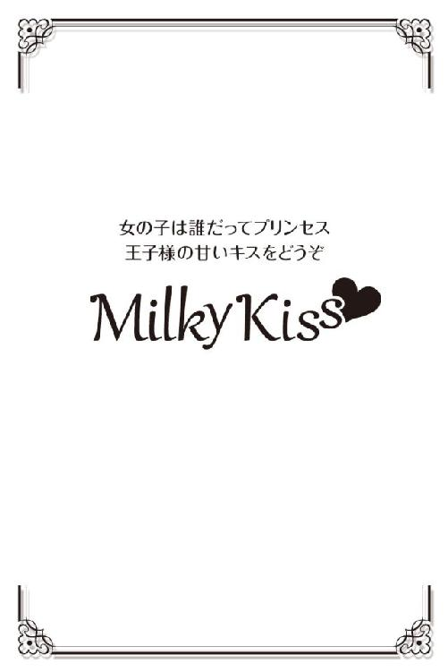

| シークレット・ダンディ (Milky Kiss) | |
| 玉紀直 | |
| 株式会社 パブリッシングリンク (2017) | |

シークレット・ダンディ
玉紀 直
【１】
「どこ見て歩いてるんだ！ 目の玉ひんむいて周りを良く見ろ！」
本間柚葉は怒鳴られた瞬間、心臓が飛び出るほど驚いた。
いや、飛び出る前に止まってしまいそうだとも思った。
小春日和が嬉しい、うららかな秋の正午過ぎ。会社の裏手で見つけた、小さな公園。
公園を囲む柵の前に植えられた花や公園内の木々。それらをとても清々しく感じた柚葉は、導かれるままに足を進めていた。
こんな場所に公園があるなど知らなかった彼女は、物珍しげに周囲を見回し、そして、踏んだのだ。
〝何か〟を。
（えっ？）
と、思った瞬間、その〝何か〟は、ガバリと起き上がり彼女を一喝した。
（なっ......何っ!?）
いきなり何かを踏み、そして唐突に怒鳴られる。
心臓こそ止まりはしなかったものの、代わりに息が止まり身体は硬直した。そして、彼女の目は起き上がった〝何か〟を捉える。
男だ。
コートらしきものを着た、成人男性。二十三歳の柚葉よりは確実に年上だろう。
だが、あまりの驚きに、目の前の人間がいったい何者で、自分に何を言おうとしているのか、思考が停まって判断できない。
しかしそれでも、彼女の頭は時々耳にする路上生活者を巻き込んだトラブルを思い出す。つい最近も、ホームレスが帰宅途中のＯＬを襲うという事件があったばかり。
（な、殴られるかもしれない！）
男の足を踏んだあと怒鳴られてから、その思考に辿り着くまでわずか数秒。そして柚葉は、「逃げなきゃ！」という結論に到達する。
彼女はクルリと男に背を向け、猛然と走り出した。
（怖い、怖い、怖いーっ！）
追ってくるのではないか。捕まえられてしまったらどうしよう。そんな不安で、一杯になる。ひとまず人通りが多い所まで行けば、もし捕まってしまってもなんとかなるのではないか。そう考え、柚葉は人や車も多い表通りへと走り出た。
足を止め、おそるおそる背後を振り返る。そこに怪しい男の姿はない。柚葉は大きく安堵の息を吐く。あまりにもホッとしたため、脱力して頽れそうになってしまった。
「......ああ、びっくりした......」
午前中は、納期が早まった案件のせいで上司の機嫌が悪く息が詰まった。気分転換に外で昼食をとろう。そんなことを考えて会社を出たというのに。気分が良くなるどころか、反対に怖い目に遭ってしまった。
「なんか......、ついてないなぁ」
こうなると、外食という気分でもなくなってしまう。顔を上げると、ＣＭなどで馴染みの深いハンバーガーショップが目に入る。
柚葉は諦めるように店へ足を向け、お気に入りのキャラクターにつられてオマケ付きのセットメニューをテイクアウトした。
フェースデザイン企画株式会社。
パッケージデザインを主体に、プロダクトデザインやグラフィックデザインなどにも手を広げる中堅企業だ。
柚葉はここの、パッケージ部デザイン室にいる。
職種は、アシスタントデザイナー。
デザイナー、と名は付いても、仕事内容は〝アシスタント〟の部分がほとんど。上司にあたるデザイナーの補佐的な仕事や、雑用が大部分を占める。
仕事量は多く、クライアントとの打ち合わせなどのセッティングや同行、店舗リサーチを含む競合分析にサンプリング制作まで、さまざま。
そして時に、他のデザイナーが関わっている案件の補助的な仕事まで回されてくる。そのデザイナーには専属のアシスタントがいるにもかかわらず、だ。
つまり、他のアシスタントデザイナーが持て余した仕事まで押しつけられる。
それでも柚葉は真面目に仕事をこなす。なんの情報もなしに彼女を見れば、優秀な社員だと他人の目には映ることだろう。
だがそれは間違いだ。柚葉にとって、この仕事量は〝契約違反〟にあたる。
──なんといっても彼女は、派遣社員、なのだから。
「あっ、本間ちゃーん」
なれなれしい呼びかけに柚葉はピタリと足を止め、口角を上げて笑顔を繕ってから声のした方向に顔を向ける。だが、その笑顔が無駄なことはすぐに分かった。
呼びかけた本人、矢口孝史は、デスクでパソコンを見つめたまま、チラリとも柚葉に視線を向けてはいないからだ。
彼女がデザイン室に戻ったことを知ったのも、おそらく中へ入った瞬間すれ違った社員が「本間さん、お昼ご飯買ってきたの？」と言う声が耳に入ったからだろう。
「先生、何か？」
「んー、今日の午前中に会う予定だったクライアントさぁ......。夕方に時間を変更にしたのはいいんだけど、昼に連絡するって言っておいて、まだ連絡がないんだよね。本間ちゃんさ、ちょっと電話してみてよ」
「あ、はい。でも、良いんですか、私が電話しても。正式な契約が成立して最初のプレゼンが成功するまでは、関係を密にしたいから担当者との連絡は先生が自らするって......」
「うん、大丈夫。向こうはウチに頼みたがってるのが良く分かったから。心配してた他の会社との取引は、頭にないみたいなんだよね。だから、本間ちゃん訊いておいて」
「はい......、分かりました」
自分がやると言ったのだから、その辺りは上の人間としてシッカリとやってほしいものだ。そうは思うが口には出せず、柚葉はスッキリとしない気持のまま自分の席に向かう。
矢口は、柚葉がアシスタントとして付いているデザイナーだ。まだ三十二歳と若いが、大きな仕事を何件も成功させ、広くエンドユーザーに定着したヒットデザインも持っている。
血気盛んな年頃だからイイ気になってる、などと業界で陰口を叩かれることもあるが、実力はある男だ。
本人もそれが分かっている。そんなプライドゆえだろう。アシスタントは、彼を「先生」と呼ばなければいけない決まりだ。
「先生」と呼ばれるデザイナーは業界に何人かはいる。そもそも、ベテランで誰もが認める人物であれば、自然に皆が「先生」と呼ぶようになるはずだ。
（お昼食べる前に、クライアントに電話しておこうか......）
自分のデスクへ向かいながら、斜め後ろからチラリと矢口を振り返った。話をしているあいだ、一度も柚葉を見ることなくパソコンのモニターを見つめ、時々キーボードを叩いていた彼。真剣な表情をしていたので、平面図でも起こしているのかと思ったのだ。
だが、覗き見た瞬間、柚葉の口元は引きつった。
矢口のモニターでは、ＬＩＮＥが起動されている。しかも、彼の口元はかなりニヤついている。
どう考えても、真面目な会話をしているとは思えない。
昼休みなのだから、プライベートに時間を使うなとは言わない。だが、大切なクライアントが関係している仕事をアシスタントに押し付けてまで、するべきことだろうか。
大きな溜息をつきたい気持ちをグッと抑え、柚葉は目を逸らす。しかし、デスクに着いた瞬間、そこに置かれていた物を見て飲み込みかかった溜息が反射的に漏れてしまった。
綺麗に片づけておいたはずのデスクに置かれたファイル。上に貼られた付箋メモ。
【柚ちゃん、よろしくね】
最後にハートマークの付いたそのメモは、同じくアシスタント職についている女子社員からのものだ。今までの経験から察するに、おそらく本人がやるべき仕事を回してきたのだろう。
同じアシスタントという職でも、正社員と派遣社員。
立場が違えば、相手に対する意識も違う。面倒な仕事をこっそりと回されてしまうのは、今に始まったことではない。
派遣はなんでもやって当たり前。たとえそれが、他の者がやるべき仕事でも。そう見られがちであることを、柚葉は二年の派遣生活で思い知らされた。
世の中、決してそんな企業ばかりではないことは分かっている。だがここは、少々そんな気配があるようだ。しょうがないとは思いつつも、気持ちが疲れているときなどは「派遣だと思って軽く見て......」などと卑屈になってしまう。
幼い頃から、絵を描くのが好きで、特に物を擬人化するのが得意だった柚葉は、高校を卒業してから芸術系専門学校で二年間、デザインの勉強をした。
卒業して念願のデザイン会社へ就職したが、一年で会社が倒産。
職探しもなかなか上手くいかず困っていたところ、同じく職探しをしていた元職場の先輩に、派遣会社へ登録しないかと誘われた。
担当に付いた女性の営業が、やはり二十歳そこそこで勤めていた会社が倒産し、再就職に苦労をした経験を持つ人物。そのせいか柚葉にえらく同情をしてくれ、仕事は切れることなく紹介してもらえた。
契約期間が切れれば、次が決まるまで仕事がなくなる。それを防ぐために複数の派遣会社へ登録する者も少なくはないなか、柚葉は一社のみの登録でなんとかなっていたのだから、運が良かったというべきだろう。
そして今年の春、このフェースデザイン企画を紹介された。
アシスタントデザイナーを派遣で補うというのも珍しいように思ったが、どうやら人件費をおさえるためらしい。デザイン関係の仕事に半年から一年従事した経験のある者という条件を見て、営業はすぐに柚葉に声をかけてくれた。
時給は普通だが、とある特記条件が彼女の気を引きつけた。それが決め手となって二つ返事で紹介を受けたのだ。
しかし......。
やりたかった職に就けたからといって、どんな職場環境でも満足できるとは、限らない────
『君、かわいい声だね』
「は？」
明らかに会話が噛み合わない。
柚葉はつい疑問符を頭に浮かべてしまった。
矢口に頼まれたクライアントに電話を入れたのだ。夕方の来社時間を確認したいと担当である常務へ告げたところ、この言葉が返ってきた。
（声......？ 声って......、ここって、確かお菓子メーカーだよね。声は関係ないんじゃ......）
戸惑う柚葉の様子など、まったく構わずに、常務は自分のペースで話をする。
『君は、矢口君のアシスタントだって言ったっけ。今日の話し合いには、君も同席するのかな？』
「指示は受けておりませんので、私は同席しないと思います」
『どうして？ 矢口君のアシスタントなら、打ち合わせに参加すべきだろう？ ところで君、歳はいくつ』
「は......？ あ、二十三歳ですが」
『若いねぇ。よし、尚更会ってみたい。絶対に同席してくれよ。いいね』
「はい......あの、ところで、ご来社予定のお時間は......」
相手のおかしな言葉には戸惑うばかりだ。これは話を戻してさっさと電話を終わらせるしかない。
夕方五時という来社時間を確認し、柚葉は早々に受話器を置く。通話時間は短かったはずなのに、なんだか疲れを感じてガクリと脱力した。
「ご......合コンじゃないんだから......」
声がかわいいだの、会ってみたいだの。まるで合コンの打ち合わせかテレクラの会話のようだった。
（だって、クライアントと話すんだから、気取った声だって出すわよぉ）
確認した時間を早速伝えようと矢口を振り返るが、彼はまだＬＩＮＥの最中のようだ。
こっそりデスクにメモを置いてきても良いのだが、ＬＩＮＥなどしてないフリをして、何食わぬ様子で難しい表情を作るだろう。
（終わってから伝えよう）
ひとまず昼食だ。柚葉はハンバーガーセットが入った紙袋を手に取った。
袋の中には、定番のハンバーガーにポテトとバニラシェイクのＳサイズ。ショップオリジナルのおもちゃ。セット自体は子どもをターゲットにしたものだが、大人でも購入は可能だ。
実際、各メニューを単品で買うより五十円近くお得なのだ。
シェイクのカップを振ってみると、電話で時間をとられたせいか少々溶けているのが分かるが、混ぜて飲めば大丈夫と、おもちゃが入った黒いピニール製の袋を手に取った。
おもちゃはキャンペーン期間ごとに種類が変わり、自分で欲しいものを選べる時期と、何が出るかはお楽しみの時期とがある。今は何が出るのか分からない期間なので、中身が分からないよう黒い袋に入っているのだ。
さほど期待などしていなかった柚葉だが、その顔は、袋を空けた瞬間にほころんだ。
「......かわいい」
出てきたのは、ショップオリジナルのマスコット。二頭身にデフォルメされた白い猫だ。
子どもへの配慮か、プラスチック製で大きめのチェーンに同素材のキーリングが付いている。
まん丸の目に赤いほっぺ。ぽってりとした体形に短い手足。ちびキャラっぽくにっこりと笑った表情が、なんともいえずかわいい。
それを目の前にぶら下げ眺めながら、シェイクを口にする。思ったよりもトロリとした食感を残していたそれは、強く吸い込まなくても口の中へ広がり、その甘さで柚葉をさらに笑顔にした。
（へへっ、らっきーぃ）
現金ではあるが、だいぶ気分が良くなった。
愛され系キャラクターのかわいい姿と、シェイクの甘さにホッとする。そのふたつが、ノリの軽いクライアントやＬＩＮＥでニヤつく上司への不快感を晴らしてくれたような気がする。
柚葉は、デスクの上に置いていたショルダーバッグのストラップにマスコットを取り付け、つんっとつついた。
（ハンバーガーにして良かった）
外食する気力を無くした末での選択だったが、結果的には正解だ。
ふと、柚葉の気分を萎えさせた原因となる出来事が思い出される。公園での一件だ。
落ち着いて考えてみれば、そんなところに人がいるなんてこれっぽっちも思わず、いきなり人の足を踏んでしまった柚葉も驚いたが、踏まれたほうだって驚いただろう。
柚葉は椅子のキャスターに載せていた足を床に下ろし、キュッキュと踏みしめてみる。あの男性を踏んだのは、どの程度の強さだっただろうかと確認がしたかったのだ。
（かなり、痛かったかな）
「謝ったほうが、いいかな......」
マスコットを見つめ、ポツリと呟く。
邪気のない素朴なかわいらしさに笑みを漏らし、柚葉は、仕事が終わったらあの公園へ行ってみようと考えた。
【２】
「あの......、先生、お先に失礼します」
おそるおそる口にすると、じろりと矢口の三白眼に睨まれる。
だが彼は特に文句を口にすることもなく、溜息混じりに「ああ」と呟いて柚葉から目を逸らした。
すれ違う社員にも、同じように「お先に失礼します」と声をかけオフィスを出る。ドアを閉める間際、「派遣はすぐに帰れていいよね」という女子社員の声が聞こえたが、柚葉は聞かなかったことにしてドアを閉めた。
残業などの時間外労働は無し。それは、派遣条件の中に入っている。だが柚葉の場合は、仕事が押していたり、預けられた案件が終わらないなどといった場合には残業を断ってはいない。
それでも正社員などからは、時々このような嫌味を言われる。
とはいえ、時に扱いが悪いこともあるが、デザインに関わる仕事は楽しい。だからこそ、与えられた仕事にはきちんと結果を出そうと頑張れる。派遣先で困ったことがあれば派遣会社の営業に相談をする約束にはなっているが、この程度ならば泣きつく必要はないと思う。
これで身近に愚痴を吐く相手でもいれば、もっと楽しく仕事ができるのかもしれないが、従業員数百名弱の会社で、柚葉と同じデザイン室に所属するのは二十名。そのなかで派遣は柚葉だけだ。立場が違う社員たちに、愚痴など言えるはずもない。
「さて、行ってみるか」
腕時計を確認し、ひとりごちる。目的は例の公園だ。
昼にいたからといって、今もあの男性がいるとは限らない。だがもしも、本当に路上生活者であの公園を根城にしているのなら、夕方に行ってもいるのではないかと思ったのだ。
（いなかったら、いないでも良いし。......そうなったら、明日の昼にまた行ってみても良いし）
昼と同じように裏通りに向かって歩いていると、大きな黒い車が来客用の専用駐車場へ入っていくのが見えた。
「あのクライアントかな......。やっと来たんだ」
改めて腕時計を見る。もう六時近い。約束は五時だったので、一時間ほど遅れている。
五時のつもりで話し合いの準備は整えてあった。帰る間際、矢口の機嫌が悪かったのは、クライアントがなかなか来なかったせいだ。
先方に「君も同席しなさい」と言われたことは矢口にも伝えた。だが彼は「女の子が電話したから、からかったんだよ」と一笑に付し、同席はしなくて良いと柚葉に言ったのだ。
「先生が『しなくて良い』って言ったんだから......。しなくて大丈夫だよね」
柚葉は改めて結論付け、公園へ向かった。
昼休みに、この公園を見付けたときは本当に驚いたのだ。
フェースデザインへ派遣されてから五ヵ月も経っているというのに、裏手にある公園の存在は、まったく知らなかった。
それに気づけないほど、自分は必死だったのだろうかと柚葉は思う。
与えられた仕事をこなし、当然のように言われたレベル以上のことができるように努めて。──真正面だけを見て、働き続けているだけ。
それと同じように、視線も真正面しか捉えてはいなかった。ただ目の前にある物を片付けていく、そんな毎日。
いつもと違う方向へ歩いてしまったのは、気分転換。本当に〝なんとなく〟だったのだ。
「わぁ......」
思わず声が出た。
なんとなく、で見付けてしまった公園。昼間は溢れる木漏れ日に誘われた。そして今は、初秋の夕陽が公園の木々を染め、彼女の目を奪う。
（綺麗だなぁ）
その光景に見惚れ、柚葉は公園へ足を踏み入れる。だがすぐにハッと気づいた。昼も、こうしてぼんやり歩いていて例の男性を踏んだのではなかったか。
（もしかして、また......！）
一歩引き、足元に広がる芝を見るが、人が寝転がっている気配はない。ホッと胸を撫で下ろす。だが、その時──
「あれ？ 君......」
声をかけられて顔を上げると、近くのベンチにひとりで座っている男性が、柚葉に顔を向けている。
夕陽色に染まってはいるが、おそらく白いワイシャツにベージュ系のコートを羽織っているのだろう。そして、コートと同系色らしきアルペン帽をかぶっている。つばの前を下に向けてかぶっているため、顔がよく見えない。本人はこれで前が見えているのだろうかと、余計なことながら心配になるかぶりかただ。
柚葉が小首を傾げていると、声の主はひょいっと親指で帽子のつばを上げる。その顔を見た瞬間、柚葉はハッと息を呑んだ。
（昼間の人！）
意識して思い出そうとしてもボンヤリとしか浮かばなかった輪郭は、実物を見ると記憶の残像とハッキリ重なり合う。
彼は確かに、昼間、柚葉が足を踏みつけた男性だ。
「昼間の......」
「お昼は、すみませんでした！」
男性が話し出す前に、柚葉は先に謝罪の言葉を発し、ツカツカと彼の前へ進むと、勢いよく頭を下げた。
「こ、この公園、初めて来たんです！ 物珍しげに眺めてたから、あんな所に人がいるなんて気づかなくて......。思いっきり踏んでしまったうえ謝りもせずに逃げてしまって、本当にごめんなさい！」
感情にまかせて謝ったものの、その後が続かない。相手もなぜか黙ったままだ。
気まずくて、柚葉は頭を上げられない。
この状況を笑うかのように、カラスの鳴き声が耳に入ってくる。
下がったまま動かせない柚葉の視線が、男性の足元を捉える。彼は、つやつやとして形の良い黒の革靴を履いていた。見た目からも、安物ではない印象だ。
ホームレスかとの勘繰りは間違いだったのではないか。そう思ったとき、男性が口を開いた。
「......君さぁ」
「はい？」
返事とともに顔を上げる。だがアルペン帽の下から厳しい視線を向けられ、柚葉はビクリと身体を震わせた。
「謝るために、ここに来たの？」
「......は、はい......あの......、思い切り踏んでしまったし、......痛かっただろうなって......。なのに、私、驚いて謝りもしないで......」
「俺が夕方もここにいるのかなんて分からないのに？ それとも、ベンチの後ろなんかに転がってたから、ホームレスだとでも思った？ それだったら、いる確率も高いもんね」
「はい、あの、......いえ、そんなことは......。でも、謝るためにはここしか思いつかないし。今いなかったら、明日の昼、明後日の昼、何日か続けて来てみようって思ってました」
「見ず知らずの男に？ わざわざ謝るために？ 俺がもし、若い女の子をどうにかしてやろうって考えてる悪い男だったら、どうするつもりなんだ？」
「そ、そんなことは、考えていませんでした......。ただ、謝りたかったんです。それだけです！」
これではまるで、謝りに来た柚葉が、女として軽々しい間違ったことをしていると言われているようだ。
本気で申し訳ないと思ったからこそ、ここまで来たのに。そんな気持ちを分かってもらうこともできないのだろうか。
だんだんと気持ちが沈みこんできて柚葉の眉は、悲しげに下がる。すると、つり上がっていた男性の眉も、ふっと下がった。
「凄い度胸だな」
「え......？」
「相手が見ず知らずの人間でも、悪いことをしたと感じたから謝りたい。逃げて知らんふりをしてしまえば、それっきりにできたのかもしれないのに。なのに、わざわざここまで来たんだろう？ 偉いよ」
柚葉は目を見開いて男性の顔を凝視した。
あんなに怖く見えていたのに、今はとても穏やかな表情に見える。そして彼は言ってくれた。
──偉いな、と。
つんっと、鼻の奥に刺激が走った。それにつられて歪んでしまった柚葉の表情を見て、今度は男性が目を見開く。
「何......、泣きそうになってるんだ......」
「ご、ごめんなさ......、なんか、......嬉しくて......」
「嬉しい？」
「褒めてもらえることなんて、滅多にないから......。そう考えたら、なんだか......。ごめんなさ......、泣くつもりなんか......」
泣くつもりなどなかった。たとえまた怒鳴られたって、しっかりと謝るだけは謝って、スッキリとして立ち去ろう。そう考えていたのだ。
「偉いな」というひと言が、毎日の仕事で張り詰めていた気持ちを緩めてしまったのかもしれない。
だがいくら緩んだからとはいえ、見ず知らずの男性の前で泣くことなどできない。柚葉は下唇を噛み、グッと息を詰めた。
すると、いかにも無理をしていますと言わんばかりの表情を見て、男性が苦笑いをする。そしてベンチの自分の横を手のひらで叩いた。
「座れば？ そうやって我慢してたら鼻水垂れるよ。ほら、ハンカチ貸してあげるから」
男性はコートのポケットをごそごそと探りながら、ベンチの右端へと移動する。彼が座っていたのは中央だったので、柚葉に近づきすぎないように気を遣ったのだろう。
「いっ、いいです、いいです。そんな。ハンカチ、汚しちゃいますから」
言われてから本当に、鼻水が垂れてしまいそうな危機的状況にある自分に気づく。柚葉は軽く鼻をすすり、ベンチの左端へ腰を下ろすと、ショルダーバッグからティッシュを出し男性に背を向けた格好で鼻を押さえた。
「本当にすみません......。謝りに来て、みっともないところを見せたうえ、また気を遣っていただいて......」
「いいや。本心を言っただけだ。いい大人でも、自分に都合が悪い、意に沿わないと思えば知らんぷりを決め込むやつが多い。そんななか、君みたいに素直な行動に出られる人は珍しい」
「そんなこと......。そんな立派な人間じゃありませんから......」
「立派か立派じゃないかなんて、自分で決めることじゃない。俺から見て、君は立派だなと思った。だから褒めた。それだけだよ」
「ありがとう......ございます」
鼻を拭ってこっそりと振り返る。自分のほうを向いたまま男性が微笑んだので、気恥ずかしくなってしまった。
頬が熱くなるのを感じて焦りながらも、柚葉は気になっていたことを口にした。
「あの、私、どこを踏みました？ 足首のような気もするんですけど」
「足首......の、少し上かなぁ。アキレス腱ではなかったと思うけど」
改めて背筋がゾクッとする。間違ってアキレス腱なぞ踏んでいたら、大変な怪我をさせてしまう可能性だってあったのだ。
「あの......、痛みませんか？ ちゃんと歩けますか？ 私......あなたが言った通り、本当に前しか見てなかったもので......」
「俺が言った通りって？」
「あの......『目の玉ひんむいて、周りを良く見ろ』って。怒られたから......」
男性は自分が言ったことを忘れていたようだ。いきなりクッと肩を震わせ、アルペン帽の前つばを傾けて顔を隠したまま小さく笑いだした。
「そうかー、俺、咄嗟にそんなこと言ったか」
「会社の裏に、こんな公園があるなんて知らなくて......。それで、珍しくて前しか見ていなかったんです」
「ふーん。君の会社って、近く？」
「あ、はい。道路を挟んで、すぐ近くにあります」
「フェースデザインかい？」
だいたいの場所を言っただけなのに、男性はピタリと言い当ててしまった。
この一帯は多くのオフィスビルが立ち並ぶ界隈なので、公園に近い会社はフェースデザインだけではない。言い当てられたことに少々驚き、口をぽかんと開けていると、肩を震わせていた男性は笑うのをやめ帽子のつばを上げた。
「あれ？ 当たった？」
「はい。よく分かりましたね」
「適当だよ。君が入ってきた出入り口から一番近いから。この公園ってね、フェースデザインの社員がよく来るんだよ。お昼はお弁当食べたり、午後はサボってたり。芝は多いし、ベンチもたくさんあるし、樹も多くて木陰もあるからすごしやすいのかな」
「そ......そうなんですか」
返事をしながら、柚葉の視線は男性の足元へ下がる。会社の話題になってしまったが、肝心の質問に答えてもらってはいない。
本人もそれに気づいたのか、左足を浮かせて足首を上下に動かした。
「ほらほら、大丈夫。折れてないよ」
柚葉はやっと胸のつかえが取れて、ホッと胸を撫でおろした。謝っていなかったのはもちろんのこと、男性が怪我をしていないかが最大の気がかりだった。
「良かった......」
ホッとしたせいか、思わず笑顔が零れる。すると、つられるように男性も笑った。
「うんうん。若い女の子は、ビクビクした顔をしているよりニコニコしているほうがいいよ。......って、ビクビクさせていたのは俺か。ごめんな」
「い......いいえ......、そんな。私こそ、本当にごめんなさい。謝りに来て良かった。安心したし、褒められたりもして、ちょっと嬉しかったです。仕事とかでも、褒められることってないから、よけいに......」
「仕事で？ 褒められたことないの？ 仕事は、楽しくないの？」
柚葉は言葉に迷う。これでは、仕事が嫌いでやる気がないのだと取られかねない雰囲気だ。
「いえ......。仕事は好きなんです。やりたいことだったし......。ただ、私、派遣なんで......」
「派遣？」
「はい。派遣社員を褒めてくれる人なんて、なかなかいませんよ」
苦笑いとともに漏らした言葉は、少々自虐的だった。
派遣は時給分働くのが当たり前。その分完璧に仕事をこなすのが当たり前。できて当たり前、やるのが当たり前、そんな人間を褒める者などいない。
男性は柚葉が言わんとしている意味に気づいたようだ。彼の表情は、深刻なものに変わってしまった。
「頑張ってるんだ。偉いな」
「そんな......。おかしな話をしてしまって、すみません。......でも、誰かに、こんなに自分のことをお話できたのは初めてかも......。良かったです。ありがとうございます」
流れでしゃべってしまったようなものだが、内容的には単なる愚痴にすぎない。
恥ずかしくなってしまった柚葉は、もう帰ろうと立ち上がった。なんとなくこの男性といると、安心感にまかせて、なんでも話してしまいそうになる。
だが、歩き出そうとした彼女の足を、彼のひと言が止めた。
「また、おいで」
「......え？」
「嫌じゃなかったら、また話をしにおいで。愚痴でも天気の話でも、なんでも聞いてあげるから。俺、昼はあまりいないけど、夜なら時々いるから」
そんなことを言われるとは思わなかったので、柚葉はぽかんとしてしまう。
口を半開きにして目をぱちくりさせていると、男性はクスリと笑った。
「多分、俺、君よりずっと年上だと思うから、君の気持ちとかちゃんと分かってあげられるかどうかは分からないけど。それでも、人に話すだけで気持ちは晴れるものだ。だから愚痴吐き場にしていいよ」
「そんな、ご迷惑なこと......」
「迷惑じゃないよー。かえって、若い女の子と話ができるんだから、俺のほうが嬉しいかも。......あ、こんなこと言ったら、警戒される？」
思いのほか無邪気な男性の態度に、今度は柚葉のほうがクスリと笑ってしまう。すると彼は右腕を伸ばし、握手を求めるように手を差し出した。
「俺の名前、エイジだから。名前でも、『おじさん』でも、どっちでも良いよ。気軽に呼んで」
「あっ......、柚......、本間、柚葉です」
相手から先に名乗られ、慌てて自分も名乗り握手に応じる。包み込まれるような大きく温かい手にドキリとした瞬間、キュッと軽く握られ、さらに鼓動が大きく跳ね上がった。
「柚ちゃんか。かわいい名前だ。最近の若い子って、かわいい名前が多いよね。かわいすぎて引きそうになるときもあるけど」
エイジの軽い、しかしチクリと刺すような皮肉に、柚葉はクスクスと笑いだしてしまう。確かに学生時代、かわいすぎる名前の同級生がいた。
彼女の笑顔を確認して、エイジの手は離れる。
「じゃあね。暗くなってきたから、気をつけて帰りな。電車かい？ バス？」
「バスです。ありがとうございます。楽しかったです」
「こちらこそ」
ぺこりと柚葉が頭を下げる。するとエイジも立ち上がり、帽子を取って胸に添え、綺麗なお辞儀をした。
その仕草は、まるで、外国映画に出てくるような紳士のように見える。
（わぁ、かっこいい......）
思わず心の中で呟いたが、まさかずっと見惚れているわけにもいかない。柚葉は出入り口へと向かい、何度も振り返りながら公園をあとにした。
振り返るたびに、自分を見送るエイジの姿が目に入る。
（あの人、どういう人なんだろう）
そんな疑問は湧いたが、彼と話したこの数分はとても楽しく、悩むほどのことではなかった。また彼と話ができるだろうかと考えているうちに、彼の人となりがどうであるかは気にならなくなった。
（明日も、あそこにいるかな）
そう考える柚葉の心は、とても明るい。
謎だらけの男性ではあるが、彼は、曇って行き詰った柚葉の心を、晴れやかにしてくれたような気がした。
【３】
「先生、おはようございます」
「......ん」
翌日、火曜日のデザイン室オフィス。写真資料を両手に抱え、不安定な状態で立ち止まり挨拶をした柚葉に、矢口は顔も見ずに生返事を返して早足で横を通り過ぎ、自分のデスクへと向かう。
椅子へどっかりと座り大きな溜息をつくと、卓上カレンダーを手に取り、それを凝視し始めた。
プレゼンまでの日数を確認しているのだろうか。それとも入稿など近くに迫っている案件のことを考えているのだろうか。何気なく矢口の動きを目で追っていた柚葉は、卓上カレンダーから逸らされた目がそのまま彼女へ向いたので嫌な予感に襲われた。
「本間ちゃん、ちょっとおいで」
「は、はい」
手にしていた資料をひとまずデスクへ置き、それから急いで矢口の元へ向かう。デスクの前へ立つと、カレンダーを戻した矢口が再度大きな溜息をつき、背もたれを軋ませながら椅子に寄りかかった。
「本間ちゃんさぁ、クライアントに言われたなら、ちゃんと言ってよ」
「はい？ なんの件ですか？」
「昨日のクライアントにさ、話し合いには君も参加するようにって言われてたんだろう？ 『電話で話をしたアシスタントは、どうしていないんだ』って、あそこは菓子メーカーだから『若い女性の意見を、是非聞きたいから参加するようにって言ってあったのに』って、豪くご立腹だったんだよ」
「え!?」
驚きのあまり背筋に緊張が走った。どうやら矢口が朝から不機嫌なのは、この一件が原因らしい。昨日は一時間近く待たされ、来たと思えばアシスタントがいないと文句をつけられ、彼は相当困ったに違いない。
この様子だと、話し合いも上手く進まなかったのではないか。
だが、柚葉がクライアントから「参加するように」と言われた旨は、矢口に伝えた。それを、女の子だからからかったのだと軽くいなしたのは彼なのだ。
「ですが、先生は私が同席する必要はないと......」
「あのねぇ、相手が冗談で言っているのか本気なのかは、言われている本人が一番よく分かるだろう。担当者は、君の意見を聞きたいから同席して欲しいって意向だったんだよ。そういうことなら僕だって、デザイン開発の方向性に関したことなのかと考えて、同席しなくても良いなんて言わなかった」
電話で話をした時、クライアントに真剣な思いがあるとは考えられなかった。声を「かわいい」とからかい、歳を聞いて「会ってみたい」と言い出したのだ。
これのどこに、そんな真面目な理由を感じる余地があったというのか。
「......申し訳ありません」
だが、柚葉は素直に謝罪を口にした。
言い訳をしても始まらないのだ。矢口は、上手く話が進まなかったことでイラついている。ここで口を出せば、逆らったと取って、さらに風当たりは強くなるだろう。
柚葉があっさり謝ったので、矢口は気勢をそがれたようだ。わざとらしく咳払いなどしながら、彼女から目を逸らした。
「まあ、昨日はさ、君は派遣社員だから、残業させることはできないんですって誤魔化したよ。その辺は、向こうが遅れたので分が悪いと感じたのか、分かってくれたから」
「そうですか。重ね重ね、申し訳ありません」
「で、次の話し合いのときは、必ず君にも同席してもらうからね」
「次？」
矢口はさきほど凝視していた卓上カレンダーを再び手に取り、柚葉へ向けて見せると明日の日付を指差した。
「明日の水曜日、午後からまた来社される予定だ。今度は君も参加しなさい。クライアントの希望だからね。分かったかい」
「はい、分かりました」
「午後一に来るとは言っていたけど、昨日みたいに予定が変わって終業時間を過ぎるかもしれない。でも、来るまでいてもらうからね。仕事なんだから。分かった？」
「はい、分かりました」
柚葉が思いのほか従順なので、張り合いがなかったのだろう。矢口はカレンダーをデスクへ戻し、大きな溜息をついた。
「コーヒー淹れて。それと、写真資料は？ 揃ってる？」
「はい、揃ってます。今、お持ちしますね」
ひとまず彼の苛立ちは治まったようだ。話が上手く進まなかった責任をなすり付けられてしまった気もするが、これも仕方がないことだ。
（我慢、我慢）
資料を取りに行こうと振り返った瞬間、一秒遅れて周囲が動き出す。どうやら矢口と柚葉のやり取りを窺っていたらしい。
デスクへ戻ると、隣の席の女子社員が苦笑いをしながら「ドンマイ」と親指を立ててくる。「ありがとう」の意味を込めて微笑み、柚葉は資料を両腕に抱えた。
朝一番から気が滅入る出来事はあったが、仕事はいつも通りに進んでいく。
その日は残業を回避しようとする社員から仕事を回されることもなく、柚葉はいつも通り十七時三十分に仕事をあがった。
会社を出て、バス停へは向かわず来客用駐車場側の道路へ曲がる。隣にある古びた喫茶店をすぎれば、道路を一本挟んだ向こう側に目的地はあるのだ。
「エイジさん、いるかな」
柚葉が向かうのは、昨日の公園。
夕方には時々いるとは言っていたが、今日もいるとは限らない。それでも昨日のことが胸に残り、柚葉は足を向けずにはいられなかったのだ。
本当は昼も様子を見に来たかったのだが、あるデザイナーのクライアントであるピザ店のオーナーから差し入れがあり、ご相伴にあずかったため外に出ることができなかった。
柚葉は、今さらながら自分が名前しか知らない男に会いに行こうとしてるなど、信じられない気分だ。昨日エイジ本人が言った通り、彼が悪戯目的の悪い人間だったなら、どうするのだろう。
だが柚葉は、そんな考えを、クスリと笑って打ち消した。
「そんなふうにはとても見えないし。本当なら、自分で言わないよ」
昨日の昼はあんな所に寝転がっていたので誤解をしたが、彼の外見を見ても路上生活者の類ではないことが分かる。偉いと褒めてもらえたことが嬉しいから、というわけではないが、悪い人には見えないのだ。
「あっ、柚ちゃん」
公園に入りかかったところで名前を呼ばれ、声のしたほうに視線を向ける。すると、昨日のベンチからエイジが手を振っているのが見えた。
「今日も来たんだ？ こんばんはー」
「あ、こっ、こんばんは」
「来るかなー、来るかなーって、気になってね。ずっと出入り口ばっかり見てたんだ。そうしたら姿が目に入ったから、すぐに声かけちゃった」
「あ、私も、いるかなって気になってて......」
ベンチの中央に座っているエイジに近づき、柚葉は肩をすくめてはにかんだ。
「でも、先に見付けられちゃいました」
そんな彼女を見上げ、エイジも微笑む。今日の彼も、首元を緩めた白いワイシャツに、ベージュ系の薄いコートを羽織っている。昨日は夕陽の朱に染まって分からなかったが、今日は曇り空であるせいか服の色味がよく分かった。
柚葉を見付けやすいようにと考えたのか、今日は帽子の前つばが上がっている。色はコートと同じベージュ系。昨日と同じアルペン帽だ。
「今日は、仕事はどうだった？」
訊きながら、エイジはベンチの右端へ異動する。昨日のように横に座るよう促されているのだと察し、柚葉も左端へ腰を下ろした。
「朝、ちょっとありましたけど、至って普通でした。お昼に、私がついてる先生とは違うデザイナーさんのクライアントがピザを差し入れしてくれて。それが凄い量だったんですよ。食べすぎちゃいました」
「へーっ。でも、お昼ご飯代が浮いて良かったね」
「はい、ラッキーでしたっ」
アハハと笑い合うが、そのあとエイジがぽつりと呟いた言葉に、柚葉はドキリとする。
「そうか......。だったら、昼に待ってても無駄だったな......」
「え......？」
「柚ちゃん、来るかなー、なんて思ってさ。ここできょろきょろしてたんだ。あんまり出入り口ばっかり睨んでるから、通った人は『怪しい人がいる』なんて思ってたかもしれない」
「待っててくれたんですか？」
「ハハハ、昨日偶然にもかわいい女の子と話ができたからって、すっかり嬉しくなっちゃって。考えることが単純だろ。男って」
「いっ、いえっ、そんな」
ここは、来るかどうか分からない柚葉を待っていたエイジが照れるところであって、柚葉が照れる必要はない。だが、彼も柚葉に会いたがっていたという事実に、彼女は戸惑いを隠せない。
「う、嬉しいですよ......。あの、私も、エイジさんがいるだろうか、って考えながら来たので......」
「ホントに？ 自分よりはるか年上の男に待たれて、嬉しい？」
「はるか年上って......。エイジさんいくつなんですか？」
「三十八だよ。柚ちゃんは？」
「二十三です」
「うわーっ、十五歳も違うんだ。十年前に待ち伏せしてたら、俺、通報されるよ」
「大袈裟ですよー」
ベンチの背もたれに腕をかけて天を仰ぐ彼を見て、柚葉は楽しげに笑う。三十代だろうとは思っていたが、前半くらいに感じていたので、三十八歳は予想外だった。
歳を気にさせてしまっただろうかと感じた柚葉は、慌ててフォローする。
「何言ってるんですか。三十八なんてまだまだ若いですよ。ウチの父親、五十過ぎてますけど、『オレはまだまだ若い』とか言って、毎朝ジョギングしてますよ」
「それは凄い」
「......でも、同い年のジョギング仲間が先日ジョギング中に倒れたとかで、『年齢の割には若い！』に変わりましたけど......」
「それは怖い」
エイジのリアクションの良さに、柚葉は笑いが止まらない。
だがその笑いを、エイジのひと言が止めた。
「柚ちゃんは、ホント、笑うとかわいいなぁ」
「やっ、やだっ、からかわないでくださいよ」
「本当だよ。......ああ、そうだ......これこれ。こいつみたいだ」
彼がつついたのは、柚葉のショルダーバッグに付けられていたマスコット。それは、昨日ハンバーガーのおまけでもらった、白い猫のおもちゃだ。
「まん丸い目で、赤いほっぺしてさ、ニコニコした顔がかわいくて、なんだかホッとするんだよな」
「赤いほっぺ......、えっ！」
柚葉は慌てて両手で頬を押さえた。自分でも少しは紅潮しているだろうかと思っていたが、そんなに赤かったのだろうか。
決してかわいい振りをしているわけではない。エイジにその辺りを誤解されやしないかと心配になるが、それは杞憂に終わる。
「昨日会ったばかりの男に会いに来るなんて大胆なことしてるんだから、緊張して顔も紅潮するよな。ごめんな、無理させて。またおいで、なんて言っちゃったから、気を遣ったのかな」
「そんなっ、無理なんてしてません。......私こそ、昨日話を聞いてもらえたからってイイ気になって来てしまって......。あの、エイジさんだって、私が調子にのってここに来るかもしれないと思ったから、わざわざ来てくれたんですよね？」
「いいや。純粋に柚ちゃんに会いたかっただけ」
（そんなこと言われたら、また赤くなっちゃうじゃない......）
──さりげなく感じる、大人の余裕。
これが同年代くらいの男性なら、本当に会いに来たことや赤くなっていることを、冷やかしたりからかったりしてくるのではないだろうか。
（なんか、安心する）
曇り空のせいか、日の入り時刻を過ぎて周囲は薄暗くなっていく。エイジの背後にある街燈が灯った瞬間、柚葉は「あっ」と小さな声をあげてしまった。
「だいたい日の入り時刻頃に点くんだよ」
そう言いながら、エイジは再び柚葉のショルダーバッグに付いたマスコットをつついた。
「こいつ、ハンバーガー屋のオリキャラだろ。こんな天真爛漫な顔で笑ってるけど、仲間想いで頑張り屋、っていう設定になってるんだってな。どんな困難なことにぶち当たっても、絶対に逃げないで向かっていくって。かわいいナリして度胸があるよな」
「エイジさん、随分と詳しいんですね」
「うん。キャラ市場調査をしたときに、色々とね」
「キャラ市場？」
市場調査とは、いったいどんな関係の仕事をしているのだろう。
昨日も思ったが、靴はつややかで綺麗だし、落ち着いた気持ちで改めて見れば、コートや帽子は独自のチェック柄が有名な英国ブランド製だ。
そしてまた、だらしなく着崩した雰囲気はあるものの、コートをスーツの上着に替えて、シャツの首元を留めシッカリとネクタイをすれば、立派なビジネスマン風になるような気もする。
（じゃあ、なんでこんな所で......）
そう思って、柚葉はさりげなく訊ねてみた。
「エイジさんは、なんのお仕事をしてるんですか？ 時々とはいえ、ここにいるんですよね？ そんな恰好で、人間観察ですか？」
するとエイジは、にこりと笑って〝そのまま〟返してくる。
「時々ここへ来ては、人間観察ができる仕事だよ」
答えになっていない。
（なんなの......。会社の勤務時間がフレックス制でリサーチの仕事をしている人とか......）
「に、日曜日とかも仕事だったりします？」
「ん？ 土日はたいてい休みかな。仕事もたまに入るけど」
「やっぱり、市場調査、とか......？ 大変ですね」
「ん～、気になるなら農家の人とでも思っておいてよ。そうすれば、時々こんな所でボーっとしてても、時間が自由になった隙に人間観察してるんだって、納得できるだろ」
「べ、別に、あのっ......」
あまり追及してはいけないことだったのだろうかと思って焦るが、見事にはぐらかされた気もする。エイジはといえば、相変わらずマスコットをつついてニコニコしてる。柚葉の詮索も、まったく気にしてはいない。
そんな彼を見ていると、まあいいかという気持ちにもなってくる。
柚葉はふうっと肩の力を抜き、バッグのストラップからマスコットを外した。
「これ、エイジさんにあげます。気に入ったみたいですから」
「ん？ でも、柚ちゃんが気に入って付けてるんだろう？ いいよ、いいよ。ハンバーガー屋のキャラだし、店に行けば売ってるのかな？ おもちゃ屋？」
「これ、ハンバーガーセットのおまけなんですよ。おもちゃ付きの子ども用セット。エイジさんみたいな大人の男の人だと、恥ずかしくて買えないんじゃないかと思うんですけど」
「......子どもにお土産、ってフリをするとか......」
「子ども、いるんですか？」
「寂しい〝お一人様〟ですよー」
おどけてシュンっとした表情を作るエイジを見て、柚葉はアハハと笑い声をあげる。わずかに身体を移動させて彼に近づくと、彼にマスコットを差し出した。
「どうぞ」
「本当に良いの？」
「はい。色々と話を聞いてもらったお礼です。昨日も今日も、エイジさんと話をしていると、私、凄く楽しいです」
あまり遠慮をすると、柚葉が引くに引けなくなってしまうと思ったのだろう。エイジはマスコットを受け取り、リングをコートの三つ目のボタンホールに通した。
「ありがとう。嬉しいなぁ。柚ちゃんと一緒にいるみたいだ」
「そんなに似てますか？」
「あっ、体形が、って意味じゃないから」
「そういう意味だったら怒りますっ」
いくらかわいくても、ぽっちゃりとしたキャラクターに体形まで似ていると言われるのは、女性として嬉しくはない。
「ホントに、ありがとうな。今度、俺が勇気出してこのハンバーガーのセット買って同じの貰えたら、柚ちゃんにやるから」
「でも、何が当たるのか分からないおまけだから、同じ物が手に入る確率は低いですよ」
「うわー、それじゃあ無理かぁ」
エイジが笑いながら身体を斜めに傾ける。思いがけず彼が近くに寄ってきた気がして、柚葉はドキリとした。
柚葉が少しだけ座る位置をずらしたことと、エイジが身体を傾けたことで、よけいに身体が接近したように感じてしまうのだろう。
さらに、彼の香りがふわっと漂ってきて、柚葉の鼓動は速度を速めた。
（整髪剤......？ コロンかな......）
コロンなどを使用する男性は珍しくないが、いかにも「付けています」という強い香りは、時に嫌な気分になる。
さりげない自然な香り。その中に大人っぽいかっこ好さを感じてしまった柚葉は、また熱くなってきた頬に気づかれないよう、そっと両手で隠した。
【４】
翌日の水曜日は、昼が近くなるにつれ、矢口にただならぬ雰囲気が漂いだした。
昼過ぎには例のクライアントがやってくる。前回怒らせてしまっているだけに、矢口も気が張っているのだろう。
相手はこの会社に依頼したがっていると矢口は言っていたが、まだ契約の話し合いがまとまってはいない状態だ。どう転ぶかは分からない。
営業が取ってきた話ではあるが、担当になるデザイナーと話をしてから最終決定したいというのが先方の主張であるからだ。
「午後からって指定されているけど、いつ来てもいいように、本間ちゃん、待機しててよ」
「午後って、正確には......」
「午後は午後だよ。正午から三時くらいまでの間って言ってたかな」
「はあ......」
そんなあやふやな指示のおかげで、柚葉はお昼の買い物に行くことも公園を覗きに行くこともできなかった。
──そして、問題のクライアント「メリィ・ショコラ」の常務、篠原宏和がやって来たのは、十四時近くだった。
「君か。アシスタントの女の子って。思った通りだ、声と同じでかわいいね」
仕事で訪れた会社で、それも初対面の人間にかける言葉とは思えない。だが柚葉は、まず先日の件を詫びた。
「先日は、ヒアリングの場に同席できず、失礼いたしました」
「いやいや、いいんだよ。君が派遣の子だなんて知らなかったし、時間に遅れたこっちも悪かったしね」
目当ての女の子がいたせいか、篠原はご機嫌だ。通された応接室には矢口も一緒に姿を現したというのに、彼は最初から柚葉しか目に入っていないようだ。接近した瞬間に香った香水は身だしなみのつもりなのだろうが、少々強すぎるように感じた。
常務とはいっても、まだ三十五歳。メリィ・ショコラ自体、創業してまだ五年ほどしか経っていない若い会社で、社名からも分かる通りチョコレートの専門店だ。
オリジナル開発の生チョコレートやトリュフが話題を呼び、雑誌でも取り上げられたことで人気に火が点いた。
今回は、新商品となるチョコレートトリュフのパッケージについての依頼らしい。味のバリエーションごとにパッケージデザインを変えたいらしく、話が決まれば数種類の依頼がもらえることになる。
「私、お茶を淹れてきますので」
篠原が柚葉にばかり話しかけているので、矢口は面白くなく思っていることだろう。それをいち早く悟り、柚葉はいったん席を外すことにした。
お飾り的な立場ではあるが、自分がここにいれば篠原は機嫌良く話し合いに応じてくれるだろう。また、矢口とのやり取りを聞いているだけでも勉強になる。
篠原の態度は少々気になったが、柚葉は「よしっ」と気合を入れ、コーヒーを淹れて応接室へ戻った。
和気藹々と話を続けているかと思いドアを開けたが、予想に反して室内は会話もなく静まり返っている。
（な、何......、どうしたの）
篠原は無言で見本の写真ファイルをめくり、矢口も言葉なく資料を見つめているだけだ。
あまりにも不穏な空気に驚いて、柚葉は目をぱちくりとさせる。
応接セットで向かい合うふたりに近付くと、矢口が立ち上がった。
「本間さん。先に、常務とお話しして」
「はい？」
いきなりなんだろう。矢口よりも先に、何を柚葉に話せというのか。戸惑う柚葉に、矢口は引きつった笑顔を見せる。
「常務は、まず〝君の〟意見を聞いてみたいんだそうだ。商品ターゲットは君くらいの年齢の女性だから、まず君が抱いたイメージを知りたいらしい」
「私のですか？」
矢口は立ち上がり、ポンッと柚葉の肩を叩いた。
「僕は席に戻っているから。話が終わったら呼んでくれ。失礼のないようにね」
「えっ？ 席にって、......先生？」
矢口はそのまま柚葉の横を通りすぎ、応接室を出ていってしまった。
ここでなぜ彼が退室してしまったのか、柚葉にはその理由が分からない。呆然として矢口を見送っていた柚葉に、篠原が笑いながら話しかけた。
「すまないね、驚かせてしまって。いや、僕が、矢口君に席を外してくれるように頼んだんだ」
「なぜですか？」
「君はアシスタントだっていうし、矢口君の前だと、気を遣って正直な意見が言えないんじゃないかと思ってね」
それは正論かもしれない。矢口がいたのでは、必ず彼の反応が気になってしまう。当たり障りのない意見しか出てこないだろう。
「僕はね、新商品のイメージに対して率直な意見が欲しいんだ。そのためには、ターゲットにしている君くらいの女性の意見が聞きたい。社内でのモニター調査はもちろんしているけれど、社外から見たらどうなのかも知りたいんだ」
篠原の言葉を聞きながら、柚葉は電話で話した時に、事情も知らず勝手にナンパな男性というイメージを持ってしまったことを後悔した。
彼は柚葉の声を聞き、年齢を知って今回の商品にうってつけだと分かったからこそ、彼女に同席を求めたのだ。
矢口も最初は、若い女の子だからからかわれたのだと言っていたが、柚葉自身もそう思ってしまっていた。仕事に対する相手の誠意を、誤解した自分が恥ずかしい。
「あの、私の意見でお役に立つなら」
「もちろんだよ。パッケージには、商品に対するストレートなイメージをデザインしてほしいと思っている。君の意見も、ぜひ聞かせてもらいたい」
のり気になった篠原は、ソファの座っている位置をずらして柚葉に場所を空ける。話を聞くために、傍に座れという意味なのだろう。
柚葉は持ってきたコーヒーを篠原の前に置いてから、ソファの端へ腰を下ろした。
「まずは、これを見てくれるかな」
篠原は、手元にあった透明のクリアホルダーを柚葉の膝に置く。少々距離が近いことに戸惑いを感じながら、柚葉はホルダーを手に取った。
「あとで試食もしてもらいたいんだけど、まずは商品のイメージを見てほしいんだ」
ホルダーの中には、大判に伸ばされた写真が一枚挟んである。
新商品だというチョコレートトリュフの写真だ。レースペーパーの上に三種類の製品が載っていて、ペーパーやチョコレートカップの効果もあるのかもしれないが、第一印象はかわいらしいと感じた。
「新製品は、従来の物より小粒なんだよ。女性が無理なくひと口で食べられる大きさ。味も、濃厚だけど、あとに残るようなくどさはない。ここには三種類しか写っていないけれど、最終的には六種類に増やす」
写真を見たまま、柚葉は頷いて話を聞く。トリュフはメーカーによって大きさも様々だが、ひと口で食べられても、すぐに噛まなくては口の中がいっぱいになってしまう大きさの物も多い。小振りで食べやすいのは嬉しいかもしれない。
「ここに写ってるのは、定番のミルク、ビター、そして、イチ押しの抹茶」
「あっ、抹茶のチョコとか好きです」
自分が好きな物の話が出たので、柚葉はつい声のトーンを上げてしまう。思わず顔を横へ向けると、真横に篠原が近づいてきていてビクリとした。
「そうなんだよね。抹茶って、若い女性に人気があるんだよ。従来の物のほうには無かった味なんだけど、新タイプには是非とも入れたくてね。イチ押しなんだ」
「そ......そうですね......」
わざとらしくならないように顔を逸らし、写真に見入る。いつの間にこんなに距離を詰めていたのだろう。気がつかなかった。
「ほら見て。分かるかな、これ」
座り直す仕草を繰り返しながら確実に距離を詰め、篠原は柚葉の真横に寄る。顔を寄せて一緒にホルダーを覗き込みながら、写真を指差していった。
「ミルクにはパウダーシュガー、抹茶には抹茶のパウダーがかかってる。分かる？」
「は......はい......」
「ビターにはココアパウダー。でもね、トリュフ自体はそんなに苦くないから、相乗効果で甘く感じると思うよ」
「そ、そうですね......」
柚葉の声は徐々に小さくなっていった。篠原の身体が密着してくる。おまけに近づきすぎている顔のおかげで、話をするたびにその吐息が耳元にかかるのだ。
最初にも感じたが、香水の香りがますます強く鼻につく。チョコレートにまで、この香りが移ってしまうのではないかと、余計な心配までしてしまう。
（エイジさんは、とっても上手に付けているのに......）
昨日エイジに近づいたときに感じた、さりげない香りを思い出す。
今日もいつもの時間に行けば彼に会えるだろうかとの思いがよぎった瞬間、柚葉の身体はビクリと震えた。
篠原の手が膝に置かれ、ギリギリでスカートに隠れている膝頭を撫でたのだ。
「あ、あの......」
「慌てた声もかわいいね。その表情、凄くいいよ」
ゾワリと背筋を寒気が走った。篠原の声は、商品の説明をしていた時のトーンとは違う。
どう考えてもおかしな雰囲気だ。柚葉が身体をよじって離れようとすると、篠原は彼女の肩を抱いた。
「......実はね......、もう一社、話をしているんだよ......」
「え......？」
「そっちの社の条件も待遇も、なかなか良くてね。気持ちは動きかかっているんだけど、でも、どちらかといえば僕は君のほうが好みだな。......君と、イイ仕事がしたいと思うんだけど......」
強く肩を抱き寄せられ、柚葉は驚いて篠原を突き飛ばしてしまった。
「やっ......！」
勢いよく突き飛ばした拍子に、篠原の足がテーブルにぶつかった。そして、コーヒーが零れてしまう。
「あ......、すみませ......」
ホルダーをソファに置き、柚葉は慌てて立ち上がった。カップがソーサーの中で倒れ、くるりと回る。液体は周囲に飛び散ったが、幸いなことに資料などを汚すことはなかった。
それでも、このままにしておくわけにはいかない。
「あの......、私、拭く物を取ってきます......。申し訳ありませんっ」
突き飛ばされた格好のまま目を丸くする篠原を残し、柚葉は応接室を飛び出す。すると、やはり様子が気になっていたのか、通路の向こうでウロウロしていた矢口が走り寄ってきた。
「どうした、本間ちゃん」
「あ......、申し訳ありませんっ......。私、コーヒーを零してしまって......。あの、今、拭く物を持ってきますから！」
どもりつつも説明をし、柚葉は給湯室へ走る。とりあえずはコーヒーを拭くのが先決だ。
自分がこんなに動揺しているのは、コーヒーを零したせいなのか、それとも篠原におかしな素振りを見せられたからなのか、自分でも判断がつかない。
だが、この冷や汗と、尋常ではない速さの鼓動は、セクハラまがいの行為をされたことに対する拒絶反応だと分かる。
「こ......、怖かった......」
給湯室のシンクに手をかけ、大きく深呼吸をする。こんな経験は初めてだ。
派遣先でセクハラに遭った先輩の話は聞いたことがあったが、柚葉はまさか自分にそんなことが起こる可能性があるとは思ってもみなかった。
鼓動はまだ治まってはくれないが、零れたコーヒーをいつまでもそのままにしておけない。
布巾を取り、もう一度大きく深呼吸をしてから、柚葉は給湯室を出た。
ここからの話し合いは、矢口にも同席してもらおう。「先生にも私のイメージを聞いてもらって、ご教示いただきたいんです」とでも言えば、矢口は気分良く同席してくれるだろう。
「申し訳ありません。お待たせいたしました」
応接室へ入った柚葉は、思わず足を止める。
室内には、誰の姿もなかったのだ。
テーブルには用意していた資料が置きっ放しだ。倒れたカップもそのままの状態。
矢口や篠原のみならず、ソファの足元に置いてあった篠原の鞄もない。もしかしたら、違う応接室へ移動したのかもしれない。
そうなれば、資料なども移動させなくてはならないだろう。だが、ひとまずはここを片づけなくては。柚葉は急いでカップをトレイへ戻し、零れたコーヒーを拭き始めた。
給湯室へ片付けに行く前に、資料を移動させたほうが良いだろうか。そう考えたとき、ドアが開く音が聞こえた。
振り向くと、矢口が立っている。だが様子がおかしい。彼は眉を寄せて不機嫌な表情をしたまま、大きな溜息をついた。
「本間ちゃん、君さぁ......、常務に何したの？」
「何って......」
どちらかといえば、されたのは柚葉のほうだ。だがそんな説明もできないまま、矢口は彼女に怒りをぶつけた。
「常務、怒って帰ってしまったんだよ！ 仕事ってものを分かってないって、アシスタントにどういう教育をしているんだって、僕が怒られたよ！ 何をしたの、君！ この話、白紙になんかなったら君の責任だよ、どうするんだ！」
思いがけない展開に息が止まる。あまりのことに眩暈を覚えた。
「とにかく、僕はこれから先方に謝りに行くから」
「じゃ、じゃあ、私もご一緒します......」
「いいよ、僕がひとりで行く。君が来て、余計に話がややこしくなったら困るからね！」
柚葉の事情など、話せる雰囲気ではない。
矢口はそう言い残し、応接室を出ていってしまった。
毎日いるとは限らない。
そう思いながら、柚葉はその日も公園へ足を向ける。
昨日も同じことを考えながら歩いていた。昨日と違うのは、今日はよく晴れているので、夕陽が公園を染め始めているという点だろうか。
「あっ、柚ちゃーん」
いつものベンチで出入り口を凝視していたエイジが、柚葉を見付けて手を振る。顔を隠すようにかぶっているアルペン帽のつばを上げると、三十八歳とは思えない爽やかな笑顔が見えた。
篠原や矢口よりエイジのほうが年上であるのに、柚葉には、彼のほうがずっとずっと若々しく、はつらつとしているように見えてしまう。
「今日の仕事はどうだった？」
昨日も同じことを訊かれた。彼としては挨拶ついでの質問であるようなものなのだろう。だがそのひと言で、柚葉は今日の出来事を思い出す。
そして、エイジの前に立って彼と目があった瞬間、緊張の糸がぷつりと切れてしまったのだ。
「柚ちゃん？」
「......エイジさん......」
安堵感に包まれて、急に力が抜けていく。そして、悔しくても会社では零せなかった涙が、ぽろぽろと流れた。
「......エイジさ......、エイさ......ん......」
「ゆっ......、柚ちゃん？」
いきなり柚葉が泣き出したので、エイジも驚いたのだろう。彼は立ち上がって彼女の両肩に手を添え、ゆっくりとベンチへ座らせた。
「どうした、柚ちゃん？」
いつもなら、長いベンチの両端へ座るふたり。だが今日は、中央に座った柚葉の横にエイジが腰を下ろす。そして彼女の顔を覗き込んだ。
「誰かに苛められたのか？ お昼ご飯食べられないほど忙しかったのか？ それとも、やっぱりコイツが鞄にぶら下がってないから、寂しいのか？」
昨日コートのボタンホールに付けたままのマスコットを指差し、本気なのか冗談なのか分からない心配をする。
泣きながらも柚葉がクスリと笑うと、エイジはポケットからハンカチを出して彼女の顔にあてた。
「ほら、押さえておけ。鼻水垂れるぞ」
柚葉はその言葉に甘え、両手でハンカチを握る。
「エイジさん......、私、自信なくなってきました......」
そして、今まで誰にも言ったことのない弱音を吐き出した。
篠原を怒らせてしまった本当の理由は、結局は矢口に伝えられないままだった。
エイジの顔を見て安心したからか、思わず流れてしまった涙は、彼に慰められ十分もせずに止まった。
そのあとはすぐに、いつも通りベンチの端へ移動したが、お互い前よりは近い位置にいるような気がする。
「柚ちゃん、どうして、そんなことをされてまであの会社にいるの？」
セクハラまがいの話を聞いたせいだろう、エイジは苛立つ口調で柚葉に訊ねた。
「そういうのって、派遣会社の営業に相談したら、会社側と話をつけてくれるはずだろう。突き飛ばしてコーヒーを零してしまったくらいで済んで良かったよ。柚ちゃんに何かあったら、大変なことだ」
涙は止まったが、まだ借りたハンカチで鼻と口を押さえていた柚葉は、苦笑いをしてハンカチを外す。それを膝で握りしめ、小声で話し出した。
「デザイン会社に派遣って、あんまりないんです......。だから、揉め事起こして途中で解約とか、そんなことになったら嫌だし......」
「デザイン会社にこだわる理由でも？」
「派遣やる前に勤めていた会社が、デザイン関係だったんです。倒産しちゃったんですけど......。勤めていた頃、仕事が凄く楽しくて、だからデザインの仕事がしたいってずっと思ってたんです」
「最初の会社で、柚ちゃんはどんな仕事してたの？ やっぱり、アシスタント？」
「キャラクターデザインです。私個人の案が本採用されたことはなかったけど、企画は採用されたことがありました......。テーマに沿って色々なキャラクターを考えるのって、本当に楽しいの。和み系キャラとか、かわいくて大好きなんです」
話を聞きながら、エイジはなんとなくコートにぶら下げたマスコットに目をやる。彼女が、大人でも気にせず子供用のハンバーガーセットを買ってしまえる理由が、エイジは分かったようだ。
「フェースデザインは半年契約ですけど、仕事を真面目にこなしていると認められれば契約更新があるんです。さらに適性があると上司が判断すれば、正社員に登用する、っていう特記条件があって......」
「......まだ若いし、正社員になれるっていうのは、良い条件だよね」
「......最初の会社が倒産して......、ずっと派遣でやってきて......、両親も凄く心配してるの......。私、自宅だから、よけいにそれが良く分かる。契約終了まであと一ヶ月なんだけど、切れたらすぐに違うところの紹介もらえるの？ って、母も凄く心配してて......」
「そうか......。親には心配かけたくないもんな。親孝行なんだな、柚ちゃん」
「──親のこともあるけど、フェースは社長が敏腕で、どんどん事業を拡大させている会社なんです。そのうち、キャラクターデザインにも手を出すだろうって言われているんですよ。......噂ですけど。もしそうなら、よけいに関わっていたいんです......」
結局は、自分がやりたいことのためだ。正社員登用の話や両親の話を出して、ちょっと良い子になろうとしてしまったかもしれない。
自嘲して卑屈に歪んだ柚葉の口元を、エイジは指でつつく。
「ホントに頑張り屋だな、柚ちゃんは。偉いよ」
口元をつつく指が、彼女を微笑ませる。また出そうになる涙をぐっと堪え、柚葉は赤くなりかかった頬を、夕陽の中で誤魔化そうとした。
【５】
翌日出社すると、珍しく、すでに矢口がデスクで仕事をしていた。
「おはようございます」と挨拶に立った彼女を手招きし、自分の椅子の横に立たせると、昨日の謝罪の結果を話してくれた。
「常務は、許してくれたよ」
そのひと言を聞いて、柚葉はホッと胸を撫で下ろす。
「驚かせた自分も悪かったって言ってたよ。それで、突き飛ばした非礼もなかったことにしてもらえそうだ」
「そうですか......。先生にご足労をおかけしてしまって、申し訳ありませんでした」
矢口は昨日、謝りに行くと会社を出てから、柚葉が帰る時間になっても帰社しなかった。どういった話し合いがもたれたのかは分からないが、突き飛ばしたことを知っているということは、あのとき何があったのか篠原が話したのだろうか。そんなことを考えながら頭を下げる。その直後、矢口の失笑が耳に入った。
「本間ちゃんってさ......、意外に、ちょっと過剰反応っていうか、自意識過剰なタイプなのかな？」
顔を上げると、矢口の苦笑いが目に入る。彼は柚葉を手招きし、手を口の横にあて内緒話の体勢をとった。
「常務に手を取られて、びっくりして突き飛ばしたんだって？ 何やってんの、まったく。常務はさぁ、新製品のチョコの大きさを教えようとして君の手を取ったらしいよ。そのくらいで、何かされると思ったの？ 過剰反応すぎない？」
柚葉は言葉が出ない。篠原は矢口に嘘を言ったのだ。
そんなふうに説明されたのなら、本当に自意識過剰な反応だと思われても仕方がない。
「でもまあ、そんな女の子の気持ちも分かってくれて、ちゃんと許してくれるんだから、常務は良い人だよ」
篠原のそらぞらしい作り話に納得することで、先方との関係を修復した矢口。
そのために柚葉だけが悪者になってしまっている。だが、今更昨日の真実を話したところで、信じてはもらえないだろう。
内緒話を終えた矢口は、椅子の背もたれを軋ませて寄りかかる。卓上カレンダーを手に取り、顔の横で明日の日付を指差した。
「明日。篠原常務を接待することになった。店を手配しておいて」
「明日、ですか？ お店の指定は......」
「レストランで食事をしながらゆっくり話がしたいって、常務の要望だよ。食事をしながらのほうが、場も和むだろう。こんなことがあったあとだからね。そのほうがいい」
「はい。じゃあ、常務と先生、おふたり分で手配をしておきます」
「本間ちゃんもだよ」
「はい？」
矢口にピッと指をさされ、柚葉は目を見開く。
「本間ちゃんも来るんだよ。終業後の接待だけど、契約外とか言わないでくれ。これは仕事だからね」
「仕事なのは分かりますが、でも、良いんですか？ 私が行っても」
「常務のご指名だよ。常務は、よっぽど君が気に入ったようだ」
嫌な予感がしてドキリとした。矢口の口調も意味ありげだ。
柚葉に突き飛ばされて怒ったのだから、そんな相手をわざわざ指名するとは思わなかった。
柚葉が考え込んでいると、矢口は溜息をつく。
「君に分かるかな......。この仕事はさ、大きなプロジェクトになるんだよ。上昇気流にのってるメーカーだからね。これから会社が大きくなっていけば、どんどん依頼は入るだろう。ここで掴まえておいて損はないクライアントなんだ」
「はい......」
「僕も、この仕事は成功させたいし、絶対に専属デザイナーというお墨付きが欲しいんだ」
「はい......」
「常務は本間ちゃんを気に入ってる。本間ちゃんが頑張ってくれて、無事話がまとまったら、君を正社員に推してあげるよ」
「え？」
思わず視線を上げ、柚葉は矢口の顔を見る。彼女の反応に、矢口は我が意を得たりとばかりに話を続けた。
「将来的にも有益な契約になる。事と次第によっては、社長が交渉に出てきてもおかしくない案件だよ。ウチの社長は、大きな契約のときは絶対モノにできるよう根回しをする人だからね。そんな大切な相手なんだから、もし話が決まれば社長も喜んでくれる。そうすれば、僕も君を正社員に推薦しやすい」
これはまさに、柚葉が喉から手が出るほど欲しかった話ではないか。そのチャンスが今、目の前にある。
「いいかい、本間ちゃん。契約更新どころの話じゃないよ。この話を決めたかったら、今度は絶対に常務の機嫌を損ねないようにね」
「は、はい......」
柚葉の返事を聞いて、矢口もホッとする。指を三本立て、念を押した。
「三人分で手配をしておいて。明日の終業後、にね」
派遣という立場ではあるが、柚葉が誰からも軽くあしらわれているわけではない。
他の部署でも、歳が近い女子社員などは、給湯室で会うと気軽に話しかけてくれることもある。
「本間さん、大変でしょう？」
茶葉の残りを確認すべく、茶筒をシャカシャカと振りながら話しかけてきた美奈子も、そのひとりだ。
「矢口先生、チョコレート屋さんの案件もらおうとしてるんでしょう？ あのチョコレート屋さん、成長企業だから色んな会社が狙ってて大変だって。ウチの営業が言ってたよ」
彼女は柚葉よりひとつ年上で、営業部にいる。職種で言うなら同じアシスタントだ。営業社員たちの話をよく聞いているので、メリィ・ショコラの件も知っているのだろう。
「成立すれば大きな契約になるって言ってたよ。今大変なんじゃないの？ 矢口先生も本間さんも」
「うん、まあ、大変といえば大変かな」
シンクで布巾を洗い、パンッと伸ばす。大変といえば、接待のためにレストランを予約してくれとは言われたが、料理の指定をされなかったため、どこがいいのか考えるのも少々大変なことに入る。
結局は落ち着ける雰囲気を重視して、懐石料理の店に予約を取った。
「先生はもちろん、クライアント様様だもん。それについていくのに必死だよ」
「向こうだって自分の会社が注目されてるのは知ってるだろうしね。ちょっと天狗になってるよね。無理難題とか押し付けられてない？」
「うんまあ、なんとかやってる感じかな」
「がんばれー、柚葉ぁー」
「ありがとうですーっ」
ふたりでおどけて笑い合う。美奈子がポンッと茶筒のふたを抜くと、次に聞こえたのは、そんなふたりを冷やかす声だった。
「あら？ 女の子ふたりで楽しそうね。給湯室は愚痴の花を咲かせるには最適の場所よね」
ふたりの視線が声の方向へと向けられる。出入り口に立っていたのは、パンツスーツにアップした髪も艶やかな女性だ。落ち着いた雰囲気の美人、三十代後半だろう。気さくに話しかけてくれたのは良いが、柚葉は彼女を知らない。
だが、美奈子は笑顔で会釈をした。
「お疲れ様です、仁美さん。愚痴じゃありませんよ。激励です」
「激励？」
「はいー。この子、矢口先生と一緒に頑張っているので。応援してたんです」
美奈子が柚葉の腕を引き、横に並ぶ。仁美と呼ばれた女性の顔をただ眺めていた柚葉は、彼女が誰なのかは分からないまでも、美奈子にならって会釈をした。
すると仁美が笑顔で首を縦に振る。
「ああ。あなたが柚葉さんかしら」
「え？ はい、本間柚葉です」
なぜ名前を知られているのか分からない。矢口と一緒に頑張っているという言葉で分かったなら、人事部に所属している人なのだろうか。
不思議そうな柚葉を前に、仁美は人差し指で自分の目を示した。
「目をしっかり見開いて、周囲を見てる？」
柚葉は目を見開く。
この言葉。聞いたことのある言葉だ。
「派遣の方よね。矢口さんのアシスタントは大変だと思うけど、頑張ってね」
「は、はい、ありがとうございます」
仁美は微笑んだまま給湯室をあとにする。彼女の姿が見えなくなると、柚葉は美奈子の袖を引っ張った。
「あの人、誰？」
「ん？ ああ、本間さんは知らないよね。社長の秘書をやってる人」
「社長の？ そうか、じゃあ、知らないのも当然だね......。社長には会ったことがないし」
「元婚約者なんだって。今は違う人の奥さんらしいけど」
「へー、ワケありなんだ？ でもそれでまだ秘書とかやってるなら、喧嘩別れとかではないんだね」
何気ない疑問を口にして、柚葉はシンクへ戻る。使った湯呑みを拭き始めると、美奈子も背後のテーブルでお茶を淹れ始める。そして、人伝に聞いたらしい話を口にした。
「ウチの社長ってさ、ヤリ手だって言われてるでしょう？ 五年前にプロダクトデザイン部門を作って急成長させたんだけど、その頃かなりのワンマンだったらしくてね。過労死一歩手前まで追い込まれた社員とかいたらしいよ。それが問題になりかけた頃に、婚約の話もなくなったんだって」
「へーえ」
意外な話を聞いて、柚葉は思わず美奈子を振り返る。ここの仕事がハードすぎるという話は、自分が来てから五カ月間耳にしたことはない。問題が起きかけて改善されたのかもしれないが、昔はよくいわれるブラック企業だったということなのだろうか。
「婚約解消は、社長の自分勝手でワンマンな性格が原因なんて噂があったらしいんだけどね、なんだか仁美さんのほうが、その直後違う人と結婚しちゃったそうで。『社長が忙しすぎて構ってくれないから、他に恋人作っちゃったんだね』なんてことに収まってるみたい」
「そうなんだ」
仕事にしか興味のない婚約者に見切りをつけたというところなのだろうか。そんな事情があっても秘書を続けているのだから、お互いに割り切れているのだろう。
（ドラマとかならドロドロ展開だよね）
人様の問題に余計な詮索をしてはいけないと自制しつつ、柚葉はふと思い出した。
（そうだ......、あの言葉......）
どこかで聞いた言葉。仁美が柚葉にかけた言葉だ。
────目をしっかりと見開いて、周囲を見てる？
あれは、エイジが最初に柚葉を怒鳴りつけたときの言葉と、同じ意味ではないのか......
その日の帰りは公園に行くのが少し遅れてしまった。
別案件で製品仕様の変更があり、撮影済みの画像をパッケージデザインに落とし込む作業が中止になってしまったのだ。
デザインの変更と再撮影の予定の調整。フォトグラファーとの打ち合わせに同行していたので、終業時間を一時間以上すぎてしまった。
既に陽も落ちて暗くなってしまっている。今から公園に行っても、エイジは帰ってしまっているのではないか。そもそも、毎日来ているという確証はない。そう思うと、急に寂しさに襲われた。
だが、公園に入ると、すぐに彼女が求める声が聞こえたのだ。
「柚ちゃん」
いつものベンチで手を振る人。いつもと違うのは、暗くなってしまっているので彼の姿が街燈に照らされているということだけだ。
柚葉はホッとし、そして嬉しさが込み上げる。
「こんばんは、エイジさん。今日は、いないかと思ってました」
「どうして？ いるときといないときがあるとは言ったけど、柚ちゃんに会えるなら俺はここで待ってるよ。柚ちゃんが来るかもしれない可能性があるなら、たとえ忠犬ハチ公になろうと、俺はここで健気に柚ちゃんを待つんだ」
「大袈裟ですー」
クスクスと笑ってベンチへ近寄っていくと、エイジがいつものように中央から右端へ移動する。だが、いつもよりは端から身体ひとつ分、余裕を持った位置だ。
それに合わせたわけではないが、柚葉も左端から余裕を持って腰を下ろした。
「そうだ、エイジさん、これ」
ショルダーバッグから、昨日彼に借りたハンカチを取り出す。
「ありがとうございました。あの、ちゃんと洗ってありますから」
「わざわざ洗ってくれたの？ こちらこそ、ありがとう。別に、そのままでも良かったのに」
差し出されたハンカチをエイジが受け取ると、柚葉はドキリとした。お互いいつもより近い位置に座っているため、身体を乗り出さなくても受け渡しができる。今、ふたりの間には身体ひとつ分程度の距離しかない。
そのせいか、気持ち的にもエイジをとても近くに感じてしまう。
「もちろん、あ......洗いますよっ。だって、涙は付くし、ファンデも付いちゃったし、鼻水拭いちゃったし......」
「だったら、よけいにそのままでも良かった......、っていうのは、ちょっとまずい発言かな」
「変態っぽいです」
笑いながらハンカチをコートにしまうエイジを見つめ、柚葉は胸がドキドキしてくる。
すっかり周囲は暗くなり、街燈と月の明かりだけに照らされるベンチ。そんな、いつもとは違う環境下にあるせいだろうか。エイジまでも、いつもと違う雰囲気に見えてしまうのだ。
（エイジさんって。苗字なんていうんだろう。ホントに、いつもこんな所で何してるんだろう。人間観察とか言ってたけど冗談っぽいし、仕事だとしたら、なんの仕事？ 独り者みたいに言ってるけど、いい歳して本当なんだろうか......）
心の中にふつふつと疑問が湧いてくる。彼を、ただ公園でくつろいでいる人くらいにしか見ていなかったのに、いつのまにかその素性を知りたくて堪らなくなっている自分に気づいた。
「あの......、エイジさんって......」
「今日は仕事どうだった？ 遅かったけど、残業でもしていたの？」
思いきって色々と訊いてみようか。と思った柚葉の質問を遮るように、エイジから尋ねられる。柚葉は思わず自分が言いたかったことを呑みこんでしまった。
「あ、はい、仕様変更になった案件があって......。入稿間近のものだったので、いきなり忙しくなりました」
「そうか、大変だったね。君の〝先生〟は、ピリピリしていない？ 八つ当たりされて苛められなかったかい？」
「はい、......大丈夫です。結構慣れました」
「昨日の件は？ 大丈夫？」
声のトーンがわずかに落ちる。それだけで、エイジがそのことを気にかけてくれていたのだと分かる。柚葉は彼を心配させまいと明るい声を出した。
「はい、お咎めなしだったので、良かったです。でも、明日は料理店で接待なんですよ。それに付き合うことになっちゃいました」
「ご指名されちゃったの？」
「らしいです。......なんだか、商品の説明をしようとして手を触ったら、私が誤解をして突き飛ばした......、みたいな話になっているようなんですけど。でも、クライアントを怒らせてしまったのは確かなんだし、会ったら、謝ろうと思います」
「事実とまったく違うじゃないか。柚ちゃんが悪いんじゃないのに」
「でも、しょうがないんです。......仕事だし。正式に契約が決まれば、将来的にも良い仕事相手になるメーカーらしいので、頑張ります」
不安がないわけではないが、今度は食事の場でもあるし、矢口が席を外すこともないだろう。
間仕切りのある小上がりで個室ふうではあるが、周囲には人の目もある。気軽に昨日のような行為に出られる雰囲気でもないはずだ。
「偉いな、柚ちゃん。あんなことがあったのに。女の子には、辛いことだったろう」
エイジの手が、柚葉の頭をポンポンッと撫でる。彼は何気なくやったのかもしれないが、柚葉の胸はキュンっと締め付けられた。
「え......エイジさんのおかげですよ......。なんだか、ここに来てエイジさんとお話をすると元気が出るんです。頑張ろう、って。それに、偉いって誉めてもらえるし」
「そうかい？ そう言ってもらえると嬉しいなぁ。この自分が若い女の子の話し相手になんかなれるのかなとか、下心ありで言ってると思われてるんじゃないかとか、色々悩んでたから」
「悩んでたんですか？」
「いや、若い女の子と知り合いになれて、ニヤニヤしてた」
「やだ、もーっ」
おどけるエイジにのせられて、笑い声をあげてしまう。なんとなく、明日の接待のことを思うと、憂鬱になる気分が軽くなった気がする。
すると、ふと給湯室での一件が思い出された。
「そういえば今日、会社の人に、エイジさんと同じこと言われたんですよ」
「同じこと？」
「はい。『目をしっかりと見開いて、周囲を見てる？』って」
「へーえ」
何気ない相槌を打ったエイジだったが、何かを考えるかのように黙り、すぐにクスっと笑った。
「もしかして、秘書課の女の人？」
「え？ あ、はい、そうです」
柚葉はドキリとした。まさか知り合いなのだろうか。焦る気持ちは、彼女に余計なことまで口にさせる。
「しゃ、社長の秘書の人なんですけど。凄く綺麗な人で......。あの......エイジさん、お知り合いですか？」
「知り合い、っていうか......うん、そうだね。仕事関係でね。確かに綺麗な人だけど、柚ちゃんのほうがかわいいよ」
気楽に笑うエイジに付き合って、柚葉も軽く会話を続けられれば良かったのだが、そのまま彼女の言葉は止まってしまった。
（どうして知ってるの？ 仕事関係って、なんの？ だいたい、同じ言葉を使うなんて、なんだか意味深じゃない。どの程度の知り合いなんだろう）
疑問はどんどん湧いてくる。それならエイジ本人に訊いてみれば良いものだが、その言葉が出てこないのだ。
もしも、仕事以上の関わりがあったら......
（私、なんでここまで考えちゃうの......）
単純かもしれないが、独身の男性が大人の女性と知り合いだと聞くと、なんとなく意味深な男女関係を連想してしまう。もしも本当にそれが当たっていたらどうしよう。自分の考えに、柚葉はさらに戸惑った。
（で、でも、仁美さんは結婚しているらしいし、元は社長の婚約者だったらしいし、エイジさんが割り込む隙なんてないだろうし......）
独りよがりの想像は続く。深刻な表情をしてしまったせいだろう、そんな柚葉を眺めていたエイジが眉をひそめた。
「どうした、柚ちゃん。彼女に何か嫌なこと言われたのか？」
「い、いいえ、そんなんじゃないです。エイジさんが知り合いって知って驚いて......」
「ああ、そうか。そうだよな、意外だよな」
アハハと笑い、エイジはあくまで悪気ない。こうなると、変な詮索をする柚葉が本当におかしい気がしてくる。
だが考えてみれば、過去ふたりの間に何かがあったのだとしても、柚葉が気にする必要などないではないか。
（どうして、こんなに気になるんだろう......）
息苦しい。胸が締め付けられる。こんな気持ちになる自分に「もしや」の予感を持ちかけたとき、近くからもクスクスと笑う声が聞こえてきた。
見ると、ひと組の男女が笑い合いながらベンチの前を通り過ぎていく。一瞬自分が笑われているような錯覚に陥ってしまったが、そうではなく、自分たちの会話で盛り上がっているだけのようだ。
女性が男性の腕に自分の腕を絡めているので、恋人同士なのだろう。
今までは、時間的に周辺の会社などの退社時間と重なっていたため、帰宅途中のＯＬやサラリーマンなどの姿しか見かけることはなかった。
今日はいつもより時間が遅いせいで、公園を通る人たちの雰囲気も違う。
「時間が遅くなるとね、カップルが増えるんだよ。ちょうど良い散歩コースになってるんだろうね。お昼は、ベンチの後ろで転がってても平気なくらい和やかなのに。いや、夜はあてられっぱなしだよ」
そのとき、ふと柚葉は疑問に思った。
「エイジさん、ここに来たときって何時までいるんですか？ そんな遅くまでいて、カップル眺めてるだけですか？」
「すぐ帰るときもあるし、ぼーっと、飽きるまで人間観察してるときもあるよ。独りもんは自由だからね」
「た、楽しいですか？」
「んーっ、目の前に俺がいるのに、そんなもの構わんて感じでカップルがイチャつき出した時とかは、ちょっと虚しいなぁ。勝手に凄いコト始めるくせに、たまに覗きとかに勘違いされそうになるときもあるし」
「目の前でって、そんな大胆なことする人いるんですか？」
柚葉は驚いて、にわかにエイジの言うことは信じられない。エイジは話を作りすぎではないか。夜の公園でどんなことが行われているのかを聞いたことがないわけではないが、いくらなんでも人の目の前でいかがわしげな行為をするカップルはいないだろう。
「いいや。ムードにのったカップルっていうのは、自分たちの世界に酔ってるから。意外に平気だったりする。──現に、ほら......」
信じがたいと笑う柚葉に、エイジは急に声を潜めて前方を顎でしゃくる。その方向へ目を向け、柚葉はドキリとした。
少し離れた向かい側の街燈の横で、ひと組のカップルが抱き合っている。それだけならまだしも、時に唇を合わせては笑い合っているのだ。
（ちょっ......、こんな所でっ）
クラシックな街燈に照らされる公園は、確かにロマンチックだ。
通り過ぎていくのもカップルばかり。楽しげに笑いながら歩くふたりや、腕を組んでしっとりとした雰囲気のふたりもいる。
こうして見ていると、柚葉は、ただ話をしにここへ来ている自分こそ場違いな人間であるようにも思えてきた。
キスをしているカップルから目を逸らすが、なんとなくチラチラと何度も見てしまう。なんとなく気まずくて無言になっていると、エイジがぽつりと呟いた。
「柚ちゃん......、もう、帰りな」
「は......ぃ、......え？」
暗くなってきたから帰れと言ったのだと思ったが、エイジはそういう意味で言ったのではなさそうだった。
「こんな雰囲気の場所にさ、彼氏でもない男と一緒にいるもんじゃないよ。男の身体は単純だから、すぐ煽られる。いつ欲情するか分かんないからね」
「よっ、よくじょ......」
その言葉に一瞬ビクリとするが、エイジが言っている意味も分からなくはない。柚葉だって、ずっとこんな雰囲気の中にいたら、変な気分になってしまいそうだと思うからだ。
「エイジさんも......、そんなふうになるんですか？」
「なるよ。男だからね。今も、なりかかっているのを必死に抑えてるし」
「そ......そうなんですか......」
サラリと正直に告白され焦る。だが、柚葉が立ち上がることはなかった。
なぜだか、もっとエイジと一緒に、いつもとは違うこの雰囲気の中にいたいと思ってしまったのだ。
「......どうして、必死に押さえているんですか？」
「そりゃぁ、当然だよ」
エイジはにこりと微笑み、コートのボタンホールに引っ掛けたマスコットをつつく。
「柚ちゃんにはさ、いつもコイツみたいに、まん丸い目でかわいくニコニコ笑っていてほしいんだよ。場の雰囲気なんかに煽られた男に、いきなり変なことされたりしたら、柚ちゃん泣いちゃうだろ？」
「......優しいんですね」
「そうかな？ 考えかた次第だろうね。男として〝優しい〟と取ってくれるか、〝いくじなし〟と取るか」
世の中、自分の欲、ひときわ性欲に忠実な男性ばかりではないだろう。そうは思うがセクハラを経験したばかりの柚葉にとっては、エイジの自分を抑えているというさりげない気遣いが、とても心に沁みた。
「優しいと、思いますよ......」
「そうか？ 柚ちゃんにそう言われると、嬉しいな」
「本当ですよ。それが大人の男の計算だったらがっかりですけど」
「計算なんかするか。そんなもの上手くできたら、今頃独り者生活なんかしてないよ」
「そんな優しいことばっかり言われたら、女の子はその人のこと好きになっちゃいますよ。どうするんですか！」
「いいぞ、いいぞ、遠慮するな。好きになっていいぞ。柚ちゃんなら大歓迎だ」
柚葉は一般論として言ったつもりだったが、エイジは彼女を意識した返事をする。
ドキリと、鼓動が大きく柚葉の胸を叩く。しかし彼女は「もう、そういう冗談ばっかり言わないでください」と顔を逸らした。
（やだ......、ドキドキする......）
柚葉の鼓動は早まるばかりで、治まる気配がない。
────好きになっていいぞ。
その言葉が耳に残り、頭から離れてくれない。
（いいの......？）
もしこれが、大人の男の計算というものでも、それでも良いと、柚葉は思ってしまう。
（好きになって、いいの？）
昂まる気持ちに背中を押されるまま、さりげなく彼に近づく。すると、いつの間にかエイジのほうも近づいていたらしく、すぐに互いの腕が触れ合った。
「......もう少しだけ......、ここにいていいですか......？ あの、......バスの時間、半端だから......」
「うん。いいよ」
エイジの存在を意識した心が、いつもの楽しさから、ふわりと甘い気持ちに包まれる。ついさっき仁美との仲を勘繰っていた気持も、どこかへ消えてしまう
心地好さの中に、さりげない彼の香りを感じて、柚葉はとても幸せな気分になった。
【６】
「とにかく今日は、失礼のないようにね」
金曜日は朝から、ことあるごとに矢口から念を押された。
大きな仕事が決まるか決まらないかの瀬戸際だ。矢口だってピリピリするだろう。
最初はこっちに任せたがっている仕事だからとタカをくくって柚葉に確認の電話などをさせていたというのに、トラブルがあってから、篠原との連絡は矢口がとっている。
篠原は柚葉を気に入っている。だからこそ、柚葉が下手な行動を取らないよう警戒しているのだろう。
「何かあっても、軽率な行動には出ないように。特に、おかしな誤解はしないようにね」
手や足などを触られても、向こうにおかしな気はないのだから慌てるなと言いたいのだ。
とりあえずは今回の場所を考えても、先日のようなことが起こるとは考えられない。柚葉は素直に「はい」と返事をした。
会社に制服などはなく、仕事のときはカジュアルすぎない服装という規則だけが存在している。柚葉も、いつもはジーンズやタイトスカートにブラウスを合わせることが多い。だが懐石料理店での接待ではそういうわけにもいかず、終業後、持参しておいたスーツに着替えた。
柚葉が予約を取ったのは、日本食懐石料理店の一階奥にあるこじんまりとした空間だ。
矢口とともに店へ到着し、てっきりそこへ案内されるつもりでいた柚葉だったが、店の仲居は、ふたりを二階へ案内した。
二階にあるのは、全室個室の本座敷だ。間違いではないかと口を出そうとした柚葉を、矢口が止める。
「変更したんだよ。大切な話し合いだし、いくら間仕切り式でも、小上がりより個室のほうがいいだろう。まあ、そう提案したのは、常務なんだけど」
もっともらしい話ではある。だが柚葉には納得し切れない思いが残った。個室への変更を提案したのは篠原だということも気になる。
「そうですね。配慮が足りませんでした......」
そう答えはしたが、柚葉は胸騒ぎを抑えることができない。
（大丈夫よ......。先生も一緒なんだし）
すでに篠原は到着しているとのことだ。仲居が開いた障子の向こうは、少人数用の座敷。大きな座卓に三人分の席と食事の準備がなされている。
そして、座卓の上座に篠原が座っていた。
「常務、申し訳ありません。お待たせいたしました」
「いいや、僕が早く来すぎたんだ。約束の時間まで、まだ十分もある」
篠原と矢口が和気藹々と言葉を交わし、柚葉は矢口の後について会釈をする。すると、篠原の視線が柚葉に移った。
「やあ、今夜はスーツか。女の子というものは着る物で雰囲気も変わるね。随分と大人っぽく見えるよ。ほら、こっちに座って」
篠原は手招きをして、自分の横のテーブルをポンポンッと叩く。上座に一席、そして下座に二席という形になっているので、本来そこは柚葉の座るべき場所ではない。挨拶をしてすぐに離れても良いのか、それともずっとそこに座っていろという意味なのか分からない。柚葉は確認を求めるように矢口を見た。
だがどちらにしろ、その場所へ行かなくてはならないのは確かだ。矢口も「ほら常務にご挨拶を」と柚葉を押し出した。
タイトスカートから伸びた足を舐めるように見つめる篠原の視線を気にしつつ、柚葉は彼の横に正座をして頭を下げようとする。
「常務、先日は大変失礼を......」
「あーっ、待った、待った」
謝ろうとした柚葉を篠原が止めた。そして、まだ立ったままの矢口に目を向ける。
「矢口君、ちょっとこの子と話したいことがあるから、十分か十五分くらい、呼ぶまで出ててくれる？」
「はい？ 本間とですか？」
「すぐ済むよ。ただの確認なんだけど、大切なことなんだ。階段の下ででも待ってて。済んだら呼ぶよ。料理も、それからでいい」
「......分かりました」
納得しかねるが、逆らうのは得策ではないと考えているのだろう。矢口は眉をひそめ、柚葉の様子を窺う。
なぜここで矢口が部屋から出されてしまうのか。柚葉には嫌な予感しかない。
「じゃあ、話が終わったら呼んで。僕は階段の所にいるから」
矢口は、そう言い残し部屋を出ていってしまった。
障子がぴしゃりと閉まる音が、柚葉には鉄格子を閉められた音に聞こえる。不安は膨らみ続け、膝に置いている手には冷や汗が滲んだ。
閉まったまま動きを見せない障子を見つめているわけにもいかず柚葉が視線を移すと、篠原がずるい笑みを浮かべているのでドキリとした。
それは、下卑た〝男〟の視線だ。見られていると意識するのも恥ずかしくなる、いやらしい視線。
「本当に、女の子は服で雰囲気が変わるねぇ。先日は、かわいい女の子、くらいにしか思わなかったけど、スーツ姿だと大人っぽく見えるよ」
「お......おそれいります」
柚葉は篠原の顔を直視できないまま、スカートの裾を引っ張る。立っていると膝丈だが、正座をすると膝の上までの短さになる。それが気になったのだ。
「あの、常務......。先日は、本当に......」
「そうだよね。二十三歳だもんな。もう充分大人の女だよな」
このおかしな雰囲気をなんとかしようと、柚葉はし損ねていた謝罪を再び口にしようとする。しかしそれはまたもや遮られ、さらに気にしていた膝先に、篠原の手が伸びてきた。
「だから、大人の話し合いをしよう。いいかい、これは、仕事だよ」
「し......仕事......？」
動揺のあまり、声がひっくり返ってしまう。それを面白がるように、不快な手はスカートから出た膝をじっとりと撫でた。
「君の返事次第で、今日の話し合いを、矢口君や君に有利な方向で進めてあげよう」
「有利って......」
「先日も言ったけど、契約のために話をしているのは、フェースデザインだけじゃないんだ」
「はい......」
「でも僕は、凄く君が気に入ったんだよ。できれば気持ちよく話を進めてあげたい。矢口君に聞いたけど、この仕事には派遣契約の更新がかかっているんだって？ それならよけいに、君だって成功させたいだろう？」
「......はい」
「だから、取引をしよう。食事の後、僕に付き合ってくれるなら、フェースデザインと契約してあげてもいい」
「......お酒ですか？」
食事の後にふたりで飲みに行こうという誘いならば、なんとかなりそうだ。そんなに飲めるほうではないが、付き合うくらいはできる。
そのあいだ、脚を触られたり、先日のように肩を抱かれたりされるかもしれないが、酒の席でのことだと思えば良いのだ。
柚葉がそうやって自分を納得させようとしていると、次の瞬間、篠原の膝が詰め寄り、彼女の手を握った。
「何とぼけてんの？ 二十三の女なら、僕が何を言いたいのかくらいわかるだろう。〝大人の話し合い〟って言ったはずだ」
「大人の、って......」
嫌な予感が的中しようとしているのが分かる。大人の話し合い、つまり篠原は、大人の付き合いをしようと言っているのだ。
「お互い、気持ち好く仕事をしようよ。悪い話じゃないはずだ」
手を握って引き寄せられ、肩を抱きこまれる。抗うまでもなく上半身が傾き、顔が篠原の身体に近づいた。
汗と香水が混じり合った、不快な臭いが鼻をつく。そこから逃れようと、柚葉は慌てて身体を起こそうとする。
「でも、あの......そういうことは......」
しかし、より強く肩を抱かれ、身動きができない。それどころか篠原は、暴れて離れようとする柚葉をそのまま抱き締めようとした。
「派遣先の会社に不利益な行為を働けば、もちろん会社から派遣会社のほうにクレームが行くだろう。トラブルの前科なんかつけられたら、仕事がもらいにくくなるんじゃないのかな。会社のためにも、君のためにも、ならないんじゃないか？」
「でも......、こんな」
「意外と聞きわけがないんだな。もう少し説明しないと駄目かい？」
「やめっ......」
篠原の腕の中で身をよじるが、がっしりと肩を掴んで引き寄せた手は離れない。
「無駄な抵抗なのに、精一杯暴れちゃって、かわいいな。まだ分からないんだ？ 力づくで分からせてやりたくなるね、こういう子は」
「はなして、くださっ......」
手を振り払おうとするが、痛いくらい強く握られているせいで無理だ。身体を離そうとすればするほど引き寄せられていくような気がして、柚葉は泣きたくなってくる。また、そうして必死になる姿を面白がられているのが悔しい。
自分のほうが有利だとすっかり調子にのる男。欲望に忠実で、柚葉を思い通りにすることしか頭にない。
たとえ彼女が、どんなに嫌がろうと、辛かろうと、──泣こうと。
────柚ちゃん、泣いちゃうだろう？
柚葉の気持ちを気遣い、優しくしてくれたエイジの言葉を思い出し、涙が浮かんだ。自分の欲より、柚葉の気持ちが大切だと言ってくれた彼。
（エイさん......、エイジさん......）
彼が恋しくて堪らない。彼に会いたくて。彼の声を聞きたくて。さりげなく相手を気遣う、あの紳士的な態度に触れたくなった。
偉いと、褒めてくれた彼。
派遣だからといって諦めず、やりたい仕事のために一生懸命になる柚葉を励ましてくれた。
（でも、もう、......無理だよ、エイジさん！）
涙が溢れる。それと同時に大声を出してしまおうとした柚葉だったが、その時、障子が勢いよく開いた。
パンッと高く鳴り響いた音に、篠原はもちろん柚葉も驚き顔を向ける。
──そして、彼女はさらに息を呑んだ。
「......なんだ......、お前」
怪訝な表情を作り、篠原は柚葉から手を放す。ふたりが視線を向けた場所には、ひとりの男性が立っていた。
髪を綺麗に撫でつけ、仕立ての良い上質なスーツにネクタイを締めた男性は、厳しい表情でそこに立っている。そして、なぜかその背後から、矢口が心配そうに中の様子を窺っていた。
男性の姿から、柚葉は目を離せない、
信じられないのだ。
なぜなら、威厳さえ感じさせる身形の良いこの男性は、彼女がとてもよく知っている人間だったのだから。
「......エイジ、さん......？」
柚葉の呟きは、声になっていなかったかもしれない。
エイジは座敷の中へ入ると、座卓の前へ進み、内ポケットの名刺入れから名刺を一枚取り出した。
そして、それを差し出しながら、記されている通りの自己紹介をしたのだ。
「はじめまして、篠原常務。フェースデザイン企画、代表取締役社長、片桐英嗣です」
名刺を受取り、篠原は目を丸くして英嗣と名刺を交互に見比べる。まさかこの場に、社長本人が現れるとは思っていなかったのだろう。
だが、いつも以上に目が丸くなってしまったのは柚葉だ。
彼女は、この場に英嗣が現れることなど想像だにしていなかった。それも、社長という肩書を持って。
「貴社との話し合いは重要なものになるとの認識がありながら、ずっと弊社のデザイナーに対応を任せきりにしてしまい、失礼いたしました。ここからは、私がお相手させていただきます」
英嗣はキュッとネクタイを直し、篠原の向かい側へ腰を下ろす。お茶を持って入ってきた仲居に席の追加を伝えてから、柚葉に目を向ける。
彼女はといえば、ぽかんと口を開けて英嗣を凝視しているだけだ。
言いたいことも訊きたいこともたくさんある。だが今は、それどころではない。
「本間君、こちらへおいで」
「え、......は、はいっ」
英嗣に慣れない苗字で呼ばれ、戸惑いながらも柚葉は彼の隣へ移動する。彼女が無事篠原の傍を離れると、英嗣は口元だけで篠原に笑いかけた。
「この子は、矢口デザイナーのアシスタントなのですよ。アシスタントに常務のお相手をさせるなど、大変ご無礼いたしました。申し訳ありません」
「......い、いいえ、そんなことは......。いや、若い女の子だと聞いていましたので、当社の新製品のイメージを聞くのに、とても参考になりましたよ」
「ああ、それでこの子をご指名されたのですか。さすがに常務ほどの方となればリサーチにも余念がない。素晴らしいですね」
歯切れは悪いが、篠原は下心を上手く繕う。だが英嗣は、彼が柚葉を指名した理由も、その前に何があったのかも知っているのだ。
そんな余裕が伝わったのか、篠原は笑いを引き攣らせながら冷や汗を拭っていた。
「し、しかし、社長自らお出になるとは思いませんでした......」
「ええ、最終的な話し合いには同席させていただこうかと考えていたのです。我が社にとって、大事なお客様ですからね。驚かれましたか？」
「いえいえ、精力的なご活躍で有名な社長自ら出てきていただけるとは、当社のほうこそ光栄です」
「私は、御社の社長とは昔から懇意にさせていただいていたんです。うちの者が、常務にお世話になっていると聞いては、ご挨拶をしないわけにはいきませんしね」
会社の女の子に不純な行為を働こうとしていた現場を見られたうえ、自分の会社の社長と知り合いだなどという話をされては、篠原は焦らずにはいられない。
大きかった態度が小さくなったとき、末席が用意され、柚葉がそこへ移る。ほどなくして料理が運ばれてくると、話し合いが始められた。
滅多に口にする機会などない懐石料理が並べられるなか、残念ながら柚葉は、英嗣が気になりそれを味わう余裕などまったく持てなかった。
英嗣優勢で進んだ商談は、篠原にも料理の味を感じさせないものであったかもしれない。
順調に詳細が詰められ、大まかな構想からプレゼンの日程まで決まってしまった。
帰りのタクシーを前に、英嗣と篠原が笑顔で握手を交わす。そんな姿を現実に目にしているのに、柚葉はまだこの状況が信じられない。
今、堂々とした風格で話をひとつまとめてしまった男が、いつも公園で人間観察をしている男と同一人物とは......
「社長、本日は、ありがとうございました」
篠原のタクシーを見送ると、矢口が英嗣に頭を下げた。
「社長のおかげで、話が上手くまとまりました」
「あの常務は、人の足元ばかりを見すぎだ。だからといってこっちが下手に出ているばかりでは、こちらが不利益を被ることにもなりかねない。この先も、どこかで話が滞りそうになったら、私に報告しなさい」
「はい、ありがとうございます」
続いてタクシーがもう一台、店の前の通路に入ってくる。ドアが開くと、英嗣は矢口の後ろに立っていた柚葉に目を向けた。
「本間君も、ご苦労様」
「あ、いいえ、とんでもありません。お疲れさまでした。社長」
昨日まで「エイジさん」だった彼に向って「社長」という言葉をかけるのは、なんとも妙な気分だ。だが、目の前にいる彼には、公園にいるときのような柔らかな雰囲気はなく、「エイジさん」という感じではない。
「君にはちょっと話がある。一緒に乗りなさい」
「え......？」
柚葉の返事も聞かないまま、英嗣は先に乗りこんでしまった。
柚葉が戸惑っていると、矢口が彼女に耳打ちをする。
「契約更新の話か、正社員登用の話かもしれない。本間ちゃん頑張ったんだから、社長は分かってくれるよ。ほら、行っておいで」
契約が上手くいってご機嫌であるだけなのかもしれないが、意外な人物からの激励だ。柚葉も笑顔で「はい」と答え、タクシーに乗り込んだ。
タクシーの中でふたりきりになれば、英嗣はいつも通りの調子で話しかけてくれるだろうか。
しかし、タクシーの中でも英嗣は厳とした表情を崩すことなく、前を向いたままだ。行先はすでに伝えてあったのか、ひと言も発しない。
これでは柚葉も、話しかけづらい。
どうしたら良いのか分からず不安になっていると、タクシーが停まり、英嗣がやっと口を開いた。
「着いたよ。降りて」
──そこは、いつもふたりで話をする公園だった。
柚葉よりもあとに降りたというのに、英嗣はさっさと歩いていく。彼を追っていくと、いつものベンチの前で立ち止まる。
英嗣はその中央に腰を下ろし、グイッとネクタイを緩める。ふうっとひとつ息をつくと、ズボンのポケットをごそごそと探り始めた。
そしてそこから取り出した物を指に引っ掛け、柚葉の目の前で揺らしながら、いつもの笑顔を彼女へ向けたのだ。
「ゆーずーちゃんっ。怒ってる？」
いつもの英嗣だ。指にぶら提げているのは、柚葉があげたマスコット。
社長としての彼を見てから、ずっと張っていた緊張の糸が、ふっと緩む。
あまりにもホッとしすぎて、泣きそうになってしまった。
「おっ......おこっ......怒ってますっ。なっ、なんで、最初から、言ってくれなかったんですかぁっ」
「言えるわけがないだろう。『君が働いている会社の社長ですよー』なんて。言ったって信じなかっただろう？ なんたって俺、最初は柚ちゃんにホームレスと間違えられてたくらいだから」
「そ......それにしたって、あとからでも本当のことを教えてくれたら良かったじゃないですか。ど、どれだけびっくりしたと思って......、ヒクッ、おもって......」
柚葉は一度しゃくりあげ、嗚咽を抑えるために口を手でふさぐ。それでも浮かんでしまった涙が、彼女を見つめる英嗣の顔を滲ませた。
「英嗣さんが来てくれて......、嬉しかった......」
ぽろりと、安堵の言葉を漏らした柚葉の手を引き、英嗣は自分の隣へ座らせる。マスコットをポケットに戻すと、その手で彼女の頭をポンポンッと撫でた。
「あれは、様子見をしていた案件だったんだ。でも柚ちゃんの話を聞いて、常務の態度が気になった。柚ちゃんが心配だったし、だから、話し合いに顔を出そうと思ったんだよ」
「場所は......、どうして分かったんです？」
「そんなの、矢口君に訊けばすぐに分かるだろ。彼だって、俺に隠す必要もない。個室だって聞いておかしいなと思ったら、常務が変更を希望したって知って、危ないと思ったんだ。──間に合って良かったよ」
「英嗣さん、私が心配だから来てくれたんですか？」
「ん？」
「だって、『間に合ってよかった』って。......仕事のためっていうよりは......」
これは自惚れだろうか。柚葉は恥ずかしくなって口をつぐんでしまった。
だが英嗣は、柚葉が思ったままの答えをくれる。
「そうだよ。だって、自分の立場を利用した男に変なことされたら、柚ちゃん、泣いちゃうだろう？」
柚葉は英嗣のスーツを掴み、その胸に頭を寄せた。本当はギュッとしがみついてしまいたかったのだが、恥ずかしさが彼女の行動を押し留める。
「ありがとう......。英嗣さん、嬉しいです......」
「本当？」
「うん......。公園で会ってたときと違って、凄くかっこよくてびっくりしましたけど、英嗣さんが来てくれて、凄く凄く嬉しかった」
「かっこよかった？ うわーっ、柚ちゃんにそんなこと言われたら嬉しいなぁ。調子に乗りそうだ。どうだ？ 今度こそ、好きになったか？」
昨日柚葉がはぐらかした話題を、英嗣は笑いながら口にする。柚葉は頬が熱くなるのを感じながら、そろりと彼を見上げた。
「うん......。もう、とっくになってます......」
英嗣が好きだ。柚葉の心はそれを認める。
彼に会いたくて公園へ通った。彼と一緒にいると、気持ちがとても安らいだ。仁美との関係が気になったのは、密かな嫉妬の表れ。そんな感情を前に、柚葉の気持ちは決まったようなものだった。
笑っていた英嗣の表情が、一瞬真顔になる。彼はそれを見せまいとするように天を仰ぐと、柚葉の頭に載せていた手で、そのまま彼女の肩を抱いたのだ。
「柚ちゃん......、俺、調子に乗っていい？」
柚葉の顎に英嗣の指がかかり、真剣になった目が彼女を見下ろす。
「この雰囲気、利用してもいい？」
「......いつもは、耐えてるんじゃなかったんですか？」
「柚ちゃんのひと言で、決壊した」
まだ答えは出してはいない。だが、ふたりの視線は絡み合い、自然と唇が近づいた。
「......いいですよ......」
柚葉の囁きが漏れて、すぐにふたりの唇が重なる。同時に英嗣は、両腕で柚葉を包み込むように抱きしめた。
月の光と街燈に照らされたベンチ。
最初、ふたりは、その両端に座っていた。
しかし、今はその中央で身体を寄せあい、長い長い口づけをかわしていた。
【７】
「雰囲気に便乗したこと、本当に怒ってないか？」
「い、今更、ソレを訊きますかっ」
柚葉はいささか強い口調で英嗣を責めた。
今更。そう、今更だ。
それこそ、ムードに乗せられてキスをしてしまったあと、その勢いのままホテルにまで来てしまった。
お互いシャワーを浴び、さてこれから......というときに、ベッドの上で身体に巻いたタオルを奪い取ろうとしながら訊くことだろうか。
「いや、ここまでするつもりじゃなかった、とか、後悔されてもナンだなと」
「なんでそんなに気にするんですかっ」
「柚ちゃんを泣かせたくないからだよっ」
真剣な表情で言われて、柚葉は言葉をなくして彼に見惚れてしまった。
思わず、タオルの合わせ目を掴んでいた両手の力も抜けてしまう。
「スキありっ」
「きゃっ！」
すると、これ幸いとばかりにタオルを剥ぎ取られる。
ベッドサイドに置かれたスタンドライトのほのかな光だけが、ふたりを照らしている。
裸の自分を見られているのだと思うと、どうにも恥ずかしくて視線を下げてしまう。だがそうすると、上から覆い被さってきている英嗣の下半身に目がいってしまい、慌てて顔を上げた。
彼はまだ腰にタオルを巻いているが、そんなところを眺めているのだと思われるのも嫌だった。
「だって柚ちゃん、きっちりタオルを両手で掴んでるだろう？ 本当は後悔してるんじゃないかって、心配になるよ」
「そ、そんな、きっちりなんて......」
「掴んでたよ。そのままタオルを引っ張っても、きっと取れなかったと思う。──恥ずかしいの？」
「......うん、恥ずかしいです......」
柚葉が小声でポツリと呟く。すると英嗣は彼女を抱きしめ、耳元に唇を寄せた。
「柚ちゃん、かわいい......。若い子は言うことが新鮮だなぁ」
「ちょっ......、英嗣さっ......、それ、なんかおじさんくさいですよ」
「柚ちゃんから見れば、おじさんだろ？ 十五も年上だからね。一応気にしてるんだぞ」
「もうっ、三十八はおじさんじゃないって言ってるでしょうっ。私は気になんかしてませんよ」
「ホント？」
「しつこいですっ。本当です」
「良かった」という静かで甘い囁きが、耳孔をくすぐる。ピクリとすくんだ肩を撫で、英嗣の両手が乳房を包み込んだ。
ゆっくりと首筋をなぞる唇は、ときおり肌に吸い付く。やんわりと手の中のふくらみを揉みしだかれ、柚葉は震える吐息を漏らした。
「英嗣さ......、あっ......ン......」
「本当に、良かった」
「......まだ言ってるんですか？」
そんなに歳の差を気にしていたのだろうか。確かに柚葉も、十五歳も年上の男性とこんな関係になってしまうなど、思ってもみなかったことではあるが......
しかし、次の瞬間、英嗣の本当の心配は別のことにあったのだと分かる。
彼は唇を柚葉の首筋に寄せたまま、ベッドのサイドボードを指差した。
「いや、笑った顔は似てても、体形までアイツに似てなくて良かったなぁって」
そこには、英嗣がズボンのポケットに入れていたマスコットが置かれている。かわいいが、ぽっちゃりとした身体と比べられるのは嬉しくはない。柚葉は思わず英嗣の頭をポンッと叩いてしまった。
「も、もうっ、そんなことばっかり言うと、帰りますよっ」
「ダーメッ。帰さないし、放さない」
焦って言葉を発した唇が、胸の頂を咥え込む。舌が円を描くように動き、刺激を与えられ芯を持ち始めた乳首が、キュッと吸い出された。
「やンッ、......あっ......」
「やっと柚ちゃんに触れたのに。今帰られたら、俺、滾り死ぬ」
「な、なんですかぁ、それぇ......アッ、あんっ......」
「気持ちが滾るだけ滾って、本懐を遂げられず死ぬほど苦しいこと。知らない？」
「知りませんよぉ」
「俺も、今初めて言った」
「もうっ」
柚葉はクスリと笑って英嗣の頭に手を添える。胸の先に加えられる刺激に身体の奥を熱くしながら、心に残る、かすかな不安を口にした。
「英嗣さんは......、本当に雰囲気を利用しただけなんですか？」
「ん？」
「私が、好きになったって言ったから......。社長って立場を利用して......、こんな所に......」
その意味を悟り、英嗣は強く乳首に吸い付く。ピリッとした痛みが走るのと同時に、もう片方の乳房を揉みしだかれ、指で頂を擦られた。
「やぁ......んっ、あっ......英嗣さ......」
「俺が自分の立場を利用するつもりなら、会ったその日にでも、すぐに正体明かして柚ちゃんをホテルに連れ込んでるよ」
「あんっ......やっ、ぁっ......」
「間違えて踏みつけただけの見知らぬ男に、わざわざ謝りに来るなんて、律儀な子だなと思った。でも、そんなふうに律儀なだけあって、柚ちゃんは素直でかわいくて......。この子は泣かせたくないって、本気で思ったんだぞ」
疑われたことを怒っているのだろうか。それとも、初めて口にする自分の気持ちに昂っているのだろうか。英嗣の手は、少々荒っぽく柚葉の乳房を嬲り、全身をまさぐった。
「英嗣さぁん......あぁ......、やぁンっ......」
英嗣の指が太腿を撫で上げ、柚葉の中央で熱い潤いを確認する。彼はそこで手を止め、柚葉を見つめた。
「好きだよ。柚葉」
胸がドキリと高鳴る。荒っぽい愛撫とは裏腹に、彼の声はとても落ち着き、真剣みを帯びていた。そして、ほのかなライトの中、柚葉をとろけるようなロマンチックな気持ちにしてくれる。
（英嗣さん......、素敵）
出会いはどうあれ、初めて会った当日から、彼の紳士的な態度に惹かれていた。
この落ち着きは年齢的なものなのだろうか。もしかしたら、雰囲気に呑まれてしまっているのは、柚葉のほうではないのだろうか。
柚葉は英嗣に体温を熱くされながら、ぼんやりとそんなことを考える。
だが、たとえ呑まれてしまっているのだとしても、英嗣を好きだと思う気持ちは間違いではない。
「英嗣さん、好き......」
瞳を閉じると、唇が重なってきた。潤いを確認していた英嗣の指が、そのぬかるみの中へ潜り込んだので、柚葉は一瞬腰を引き攣らせた。
吸い付きあっては離れ、また吸い付いては離れる。ふたりの唇はそれを繰り返す。
まるでそのスピードに合わせるように、英嗣は柚葉の中に指を出し挿れする。
やがて離れた唇は、彼女の首筋から胸、腕から脇を辿り、腹部へと落ちる。そして次に、立て膝になっていた片脚を山形に舐めなぞっていった。
「英さ......あっ......」
脚に唇を這わされるなど、今まで経験がない。思わず引っ込めた柚葉の足首を掴み、英嗣は彼女のつま先をついばんだ。
「逃げないの。柚ちゃん、もっと味あわせて」
「え......英嗣さん......ってばぁ......」
嫌ではない。おかしな気分ではあるが、唇や舌を感じるたびにゾクゾクッとした甘い痺れが走り、脚の付け根に力が入る。
英嗣はもう片方の足へ唇を移し、今度はつま先から柚葉を味わいだした。
「柚ちゃん、美味しい」
「もぅ......、エッチ......」
「独りもん生活が長いもんで、少々しつこくなっております」
「じっ、自分で言わないでっ」
笑いながら、英嗣の唇はゆっくりと柚葉の脚をなぞっていく。内腿に強く吸いつかれ、柚葉が両脚を合わせると、英嗣は彼女の腿をさらに広げて花芯を開かせた。
「俺さ、柚って好きなんだ。レモンとかかぼすより、いい味出してくれるよな」
「そ、それ、柑橘類のユズでしょう......。もぅ......あっ！」
ふざける英嗣を嗜めようとしたが、内腿を辿った唇が最終地点の花芯へ吸いつき、なんともいえない水音をたてる。柚葉は思わずシーツを掴んで身体を仰け反らせる。
「やっぱり......美味しい......」
「えっ......えぃ、さん......、あっ、あぁっ！ やぁ、んっ！」
縦線を大きく舐め上げられ、小さな秘唇を舌でなぞられる。蜜口に溢れる愛液を吸い出され、入口をくすぐられた。
「あっ......ふぅンっ、......ダメッ、英嗣さ......ぁっ！」
刺激に耐えきれず、シーツを擦って暴れる柚葉の脚をポンッと叩き、英嗣は笑いながら顔を上げた。
「駄目？」
「だ、駄目じゃないけどぉ......、ダメぇ......」
なんと言ったらいいのか分からない。強いて言うなら、気持ち好すぎる。
舌先を押しつけるようにして、強弱をつけて施される愛撫が、なんともいえない快感をくれる。数えるほどの性経験しかないものの、こんな感覚は初めてだ。
英嗣は「真っ赤だぞー」と言いながら、柚葉の頬をつつく。
「柚ちゃんが泣いたら困るしな。......でも、コレは、泣いてもやめられないからね......」
彼はマスコットと一緒に置いていたコンドームを手に取る。途中のコンビニで六個入りを購入するとき、「せっかく買ったんだし、全部使わせてね。柚ちゃん」と笑顔で言われ、柚葉は照れくさくて「もうっ」と拗ねたフリをしてしまった。
準備を施した英嗣が覆いかぶさってくる。疼く部分に何かが触れたかと思うと、ソレはすぐに押し挿入ってきた。
「あっ、英っ......」
「だから、......泣かないでよ」
「んっ......ぁっ......、やめたら、泣くからぁ......」
英嗣の表情は、ふざけることなど許さないとでも言うように真剣だ。
力強い男の色気のようなものを感じて、柚葉はふるりと身ぶるいをした。
「分かった......、絶対にやめない」
「あっぁ......！ ハァ......」
腰を密着させ、英嗣が深く柚葉を貫く。
大きく深く、えぐるような抽送を繰り返され、柚葉は英嗣の背に腕を回してしがみついた。
「英さっ......あっ、ああっ......！ やぁっ......」
「柚は......、ホントに美味しい......」
「あぁんっ！ やぁっ......バカぁっ......」
決して激しい動きではないのに、柚葉の身体はどんどん快感を得て昂まっていく。
確実に彼女が悦ぶ場所を選んで擦り上げる英嗣の動きに、柚葉は翻弄された。
「やっ......、やぁ、あっ、イイっ、英さぁん......！」
必死にしがみついてくる柚葉の乱れた髪を掻き上げ、英嗣は微苦笑を見せる。
「......啼かせちゃった......」
「ンッ......も、それ、違う〝なく〟だし......ああぁんっ！」
「もっと、啼かせちゃおうかな......」
「やっ......やぁぁっ......、あぁっ、ダメぇっ......！」
英嗣は体位を変えるため、身体を浮かせようとした。だが思った以上に柚葉がシッカリとしがみついているので、クッと笑いを詰まらせた。
「こんなにしがみつかれたら、嬉しくて堪らない......」
「英さぁん......」
英嗣はしがみつく柚葉の両脚を腰に抱え上げる。快感に染まった彼女の顔を見ながら、腰を振りたてた。
「英さっ......ダメッ、そんなっ......、されたら、......あぁっ......んっ！」
「柚......」
下半身の動きと同じくらい激しく、ふたりは唇を貪りあう。息を荒げ、潤んだ柚葉の瞳を見つめて、英嗣は真剣な声で囁きかけた。
「柚......、正社員になるか......？」
「え......ハァ......」
「俺だけの、正社員になれ」
その意味を悟り瞠目した瞬間、深く貫かれ、熱く奥をえぐられる。嬌声をあげて仰け反った柚葉は、絶頂の手前へ引っ張り上げられた。
（〝俺だけの〟って......それ......）
この鼓動の高まりの理由は、英嗣の言葉のせいなのか、それとも身体に生まれる快感のせいなのか分からないまま、柚葉は英嗣を見つめる。
ずっと、その正体が謎だった人。
見ず知らずの男性として、初めて会ったときから、彼の紳士的な態度や優しさに、柚葉は惹かれた。
そして彼も、自分を思ってくれているのだと知って、とても嬉しかった。
「──ハァ......ぁっ......、終身雇用なら、いいですよ......」
はにかむ柚葉の目に、嬉しそうな笑顔を見せる英嗣が映る。
幸せな気分に包まれて、柚葉は英嗣とともに絶頂の波に呑まれた。
「終身どころか......、死んでも放してやらないからな......」
「英嗣さ......ぁぁっ」
「......好きだよ、柚......」
英嗣がくれる甘い言葉を、柚葉は恍惚の中で聞く。
温かな気持ちをもらって、柚葉は、この幸せに身を預けた。
「ごめんね。朝帰りさせちゃいそうだ」
柚葉を胸に抱き、英嗣は苦笑いを漏らした。
抱き合い、ベッドでまどろんでいるうちに、お互い寄り添ったまま眠ってしまったのだ。うつらうつらとしながら目を覚ましたのは、明け方だった。
「ううん。大丈夫ですよ。お仕事で飲みに行って、飲みすぎて眠くなったから、お友だちの家に泊めてもらったんだって言いますから」
柚葉が実家住まいなので、英嗣は心配をしたようだ。柚葉と愛し合ったあとは速やかに家へ送り届けるつもりだったらしい。
「そんな言い訳、通用するの？」
「うん、大丈夫です。反対にお友だちを泊めるときもあるから」
「でも、やっぱりそんな嘘をつかせるわけにはいかない。俺、ご両親にちゃんと説明するから。で、ついでに、柚ちゃんと結婚を前提にお付き合いさせてくださいって言うから」
「そっ、そんなに急がなくてもいいですよぉ」
柚葉は英嗣が性急に事を進めようとするのに驚いて顔を上げる。すると彼は、張り切って握りこぶしを振り上げた。
「思い立ったら即行動が俺のモットー。勝てる自信があるのに、動かなくてどうする」
英嗣があまりにも自信満々なので、柚葉は噴き出してしまう。小さく肩を震わせながら、彼の胸に頭を戻した。
「でも、早朝からウチになんか顔を出したら、父にジョギング誘われますよ。『走りながら話をしましょう』とかって」
「......朝食食べて、ゆっくりしてから、ふたりで行こう」
少々志気は下がったが、挨拶に行こうという彼の決意は変わらないようだ。
肩を抱く手の力強さに頼もしさを感じながら、柚葉は英嗣の身体に片腕を回す。
「そういえば英嗣さんって、仕事ではヤリ手社長とか言われて有名なんですよね？ 昔はワンマンで凄く厳しかったって聞きましたよ。......今は、そういうふうには見えないのに」
「ああ、知ってたんだ、それ」
「うん。噂で聞きました。仕事ばかりやってて、婚約者だった人に逃げられたって」
「なんだそりゃ。すっごく情けない男にされてるんだな、俺」
英嗣は気まずそうに息を吐き、片手で顔を押さえた。
「広告代理店から独立して、そのときに手を組んだ仲間と起業したのが十年前。最初に手がけた清涼飲料水のラベルデザインが大当たり。名前が売れて、会社はとんとん拍子に成長した。五年前に工業デザインに進出しようと、プロダクトデザイン部門を作った。それからも仕事は恐ろしいほど順調で、俺は仕事のことしか考えてなかった。どんな契約でも、常に押しの一手で。引くなんて、俺のすることじゃないと思ってた......」
勢いづいて話し出した英嗣のトーンは、徐々に落ちる。思い出すのが辛い部分に入ったのだろう。彼は自分の苦しい過去を晒し始めた。
「三年前、その押せ押せワンマンが裏目に出てしまったことがある。──社員がひとり、過労で倒れた。......婚約者だった今の秘書に三行半を叩きつけられたのはその時だ。こんな結果になるまで、社員の状態を理解してやれなかった最低の社長だって。どれだけの社員が、泣きながら必死になっているのか、前だけ見て突き進むことしかしない人には分からない。『目を見開いて、周りをよく見ろ』ってね」
大きく息を吐き、英嗣は苦笑いをして柚葉に視線を落とす。
「彼女は元々、一緒に起業した仲間のひとりなんだよ。だから、会社の役員でもある。いつまでも社長が独身じゃ世間体も悪いし、身近にいて気も合うし良いかってことで婚約したけど、怒らせるだけ怒らせて、破談になった」
「......でも、まだ秘書をしてくれてるんですよね。......仁美さん」
「サバサバした人だからな。気持ちの切り替えが早くて、こんな男と結婚しなくて良かったくらいに思ったのか、あのあとすぐに恋人を作って結婚したよ。それがあまりにも早かったから、仕事人間の婚約者を見限ってさっさと結婚した、なんて陰口を言われたこともあったみたいだな」
英嗣は遠い目をしていたが、クスッと笑いながら言った。
「俺がさ、柚ちゃんに出会って履歴書を調べていたのをあいつに見つかって、凄く冷やかされたんだ。『押せ押せ男がこんなコソコソと調べたりして、みっともない』って」
「え、そうなんですか？」
柚葉は仁美と顔を合わせたときのことを思い出す。「目を見開いて周囲を見てる？」という言葉は、事情を知っている彼女の、ちょっとした冷やかしだったのではないだろうか。
──傍にいる英嗣を、しっかりと見てごらん、と。
「英嗣さんが、初めて私を怒鳴ったときの、『目の玉ひんむいて、周りをよく見ろ』って、そこからきてたんだ」
「まあ、見てなかったおかげで、柚ちゃんは俺を踏んでくれたんだけどな」
「でも、英嗣さんは、どうしてあの公園に通うようになったの？ コートを着て、帽子をかぶって。多分、知ってる人が通りかかっても、英嗣さんだって分からないんじゃない？」
「うん。だから、いいんだよ」
英嗣は柚葉から視線を外し、宙を見上げる。
「周りをよく見ろって怒られて、なんとなくあの公園に行くようになった。あそこは会社の裏だから、時間によってはうちの社員がたくさんウロウロしててね。色々な話が耳に入ってきたよ。罪のない噂話なんかもあれば、愚痴や不満もたくさんあった。......『あのワンマン社長、過労で倒れてしまえば良かったんだ』なんて言われているのを聞いたときは、ハンマーで頭を殴られた気分だったな」
柚葉が慰めるようにポンポンッと胸を叩くと、英嗣は再び話し始めた。
「とにかく仕事が楽しかったんだ。やればやっただけ成果は生まれる。それが楽しくて堪らなかった。社員のために何が何でも会社を成長させなければならないと思っていた。──けれど俺は、前ばかりを見て、周囲の社員たちを見ていなかった......」
三年前の出来事は、前進あるのみだった彼の視界の狭さが起こした失敗。
だから仁美は言ったのだ。周りを見ろと。
「それから時々、あの公園で社員や通行人を観察するのがくせになった。スーツ姿で厳しい顔をしてなきゃ、意外とバレないもんだよ。公園で座ってるってのも、結構な気分転換になるし、何より、社員の素顔や生の声に触れられるのは嬉しかった」
「途中でやめようとか、思わなかった？」
「うん。仕事のやり方を少しずつ変えていって、社員の愚痴も聞こえなくなってきた頃、こんな覗きみたいなことやめようかなって思ったんだ。でも、やめられなかった。結果的には、続けていて良かったよ。なんてったって、柚ちゃんに踏んでもらえたんだから」
「踏んだ、踏んだって、そればかり言わないでくださいよぉ」
柚葉は上半身を起き上がらせて、英嗣の顔を覗き込んだ。
「ねえ、もう、隠してること、ありませんよね？」
「そうだな。全部話したと思う。......ああ、そうだ、ひとつ肝心なことを話していないか」
「何？」
「新部門を作る。柚ちゃんが言っていた、キャラクターデザイン部門だ」
「キャラクターデザイン？」
フェースデザインがキャラクターデザイン部門へ進出しようとしているという話は、本当だったのだ。
そういえば英嗣は、キャラクター市場の調査をしたことがあると言っていた。あのときは、なんのためなのだろうと思ったが、今考えれば新部門のリサーチだったのだろう。
「柚、そこで仕事がしたいか？」
「え？」
「柚は昔、キャラデザインに関わっていたんだろう？ もし正社員になれたら、その仕事がしたいと俺に言っていた。本気でやる気があるなら、新部門へ置いてやる。もちろん、こっちも正社員としてだ」
柚葉は目を見開いた。口をぽかんと開けて英嗣を凝視してしまう。
息が止まりそうだ。こんな幸運が重なってしまっても良いものだろうか。
戸惑う柚葉を見つめて、英嗣は笑い声をあげる。
「どうした。まん丸い目をして。そんなかわいい顔ばっかり俺に見せていたら、家に閉じ込めて仕事になんか出してやらないぞ」
「英嗣さんっ！」
柚葉は英嗣に抱きつき、ギュッとしがみついた。
「やりたい......。私、それ、やりたいです！」
「周囲を見回していたおかげで、俺は柚を見付けることができた。柚と一緒に、会社の未来を作っていきたい。色々あった今でも、まだ早足で歩くことしかできなかった俺が、柚葉となら、一緒にゆっくり歩いていきたいと思えたんだ」
心からの言葉に、柚葉の胸は熱くなる。
彼女を見つめながら微笑む彼にキスをして、柚葉は幸せいっぱいの笑顔を浮かべた。
〈ＥＮＤ〉
【あとがき】
こんにちは。玉紀 直です。
このたびは『シークレット・ダンディ』をお読みいただき、ありがとうございました！
好きな男性の特徴は？ と訊かれたとき、皆様はどう答えますか？
人によって様々な回答があるとは思いますが、その中のひとつに、きっと「包容力のある人」という特徴も含まれるのではないかと思います。
今回のヒーロー、英嗣に求めたのは、この「包容力」でした。
それも、いわゆる、イケメンヒーロー、が持っている気障な包容力ではなく、さりげない大人の包容力です。
ただ、書き始めてみると意外にこれが難しく、やりすぎると年齢以上に年配っぽくなってしまうし、押しを強くすると精神年齢が若くなってしまう。
重い失敗を背負い、人生経験を積んだ彼。うまく柚葉を包んであげられた、そんな姿を皆様にお届けできたのではないかと、ひとり自惚れる次第です。
エイジの正体は終盤まで出てきませんが、勘の良い方ならば途中でお気づきになりましたよね。
タイトルの〝シークレット〟は、柚葉に対しての言葉なので、途中でエイジの正体に気づかれた方には、いつエイジの正体が柚葉に知れるのかと、見守る立場でドキドキしていただけたなら嬉しいです。
〝ダンディ〟だったと感じていただけるかは謎ですが、柚葉は満足しているというところで、「よし」としてくださいね。
『シークレット・ダンディ』、いかがでしたでしょうか。
少しでもお気に召していただけましたなら、光栄です。
お読みくださいました、すべての方に感謝を。
ありがとうございました。
玉紀 直
シークレット・ダンディ
発 行 ２０１４年10月31日
著 者 玉紀直
イラスト たなか
表紙デザイン 吉田麻里以
発行者 鈴木藤男
発行所 株式会社 パブリッシングリンク
〒１０２－００７３
東京都千代田区九段北１－９－16
九段ＫＡビル４階
※この作品の著作権は著者に帰属しており、株式会社パブリッシングリンクが著者の許諾を得てお客様へ提供しているものです。
◎本電子書籍は、個人の閲覧の目的のためのみ、ファイルのダウンロードが許諾されています。複製・転送・譲渡は、禁止します。
© Tamaki Nao 2014